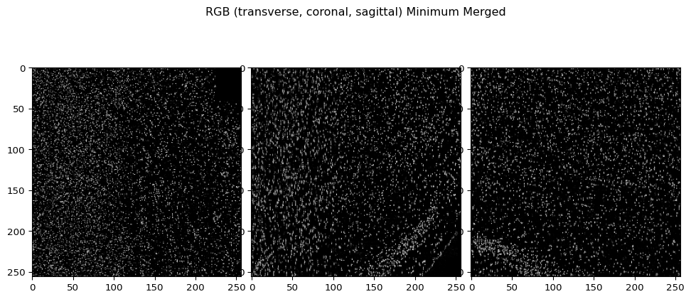
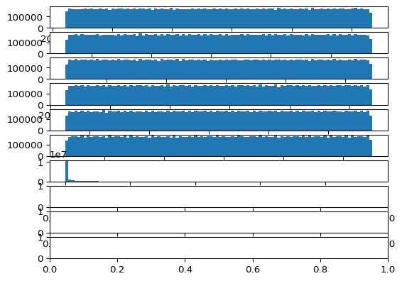
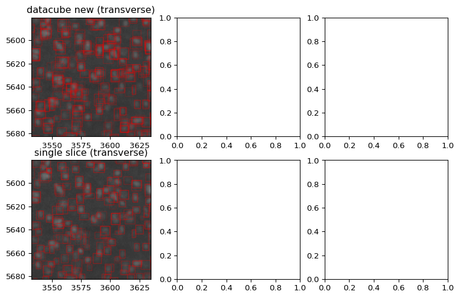

v01¶
In v01 I work with domains more carefully
[1]:
import numpy as np
import matplotlib.pyplot as plt
# %matplotlib ipympl
import os
from glob import glob
import h5py
import matplotlib.collections
import time
[2]:
def extent_from_x(xhighres):
dxhighres = [x[1] - x[0] for x in xhighres]
extenthighres0 = (xhighres[-1][0]-dxhighres[-1]/2, xhighres[-1][-1]+dxhighres[-1]/2, xhighres[-2][-1]+dxhighres[-2]/2, xhighres[-2][0]-dxhighres[-2]/2)
extenthighres1 = (xhighres[-1][0]-dxhighres[-1]/2, xhighres[-1][-1]+dxhighres[-1]/2, xhighres[-3][-1]+dxhighres[-3]/2, xhighres[-3][0]-dxhighres[-3]/2)
extenthighres2 = (xhighres[-2][0]-dxhighres[-2]/2, xhighres[-2][-1]+dxhighres[-2]/2, xhighres[-3][-1]+dxhighres[-3]/2, xhighres[-3][0]-dxhighres[-3]/2)
return extenthighres0,extenthighres1,extenthighres2
goals¶
Load and display bounding boxes for 1 sagital, 1 coronal, and one transverse whole slice.
Where they intersect I want to view a 3D volume with bounding boxes, loaded from your output data.
Potentially, I would want to reconstruct the 3D volume from the 2D slices.
First chose one 3D cube and find the slices that go right though the middle¶
The directory below has npy files.
Each npy file has an ijk index.
2,1,3 is reasonable.
Since the cube is at low resolution this starts at
i: 2 * 256 to 3 * 256
j: 1 * 256 to 2 * 256
k: 3 * 256 to 4 * 256
Because of 4x downsampling, the size is actually 1024 (at native resolution). (recall we start with 2x updsampling, and the network does 8x downsampling)
note¶
Initialized from
view_data_and_try_to_fix_shift_v01
[2]:
# output file naming convention like this
# i0000_j0000_k0000_d256_Ex_488_Em_525.npy
[3]:
threeDcubedir_for_outputs = '/home/dtward/mounts/bmaproot/nafs/shattuck/RodentToolsData/ZW-DT-1-P56-1/yolo_3D_outputs_v02_'
d = 256
out_suffix = f'd{d}_Ex_488_Em_525.npy'
[4]:
# starting location for this cube
i = 2
j = 3
k = 5
walk through the features¶
The first 3 axes are slice row col
The fourth axis has 10 numbers.
slicemin, slicemax
rowmin, rowmax,
colmin, colmax
Then confidence (normalized)
Followed by 3 class probabilities (unnormalized)
[5]:
# if i = 0, j = 0, k = 0, the first coordinate of the cube is not 0, it is 1.5
(0+1+2+3)/4
[5]:
1.5
(0) Compute several parameters before processing + Generate some validation figures¶
[24]:
# I need the spatial coordinates of the datacube
# n is the size (256)
i,j,k = 0,0,0
ndatacube = np.array((d,d,d))
# x0 is the location of the first pixel (within the high res volume)
x0datacube = np.array([0,0,0]) # initialize
x0datacube = np.array([1.5,1.5,1.5]) + np.array([i,j,k])*d*4 # (up by 2 down by 8)
# get the coordinates of each voxel
xdatacube = [np.arange(n)*4+o for n,o in zip(ndatacube,x0datacube)]
# get the voxel size
ddatacube = np.array([4,4,4])
[25]:
# for drawing we need extents
# extent for viewing with constant slice (this is transverse)
extentdatacube0 = (xdatacube[-1][0]-ddatacube[-1]/2, xdatacube[-1][-1]+ddatacube[-1]/2, xdatacube[-2][-1]+ddatacube[-2]/2, xdatacube[-2][0]-ddatacube[-2]/2)
# extent for viewing with constant row (this is coronal)
extentdatacube1 = (xdatacube[-1][0]-ddatacube[-1]/2, xdatacube[-1][-1]+ddatacube[-1]/2, xdatacube[-3][-1]+ddatacube[-3]/2, xdatacube[-3][0]-ddatacube[-3]/2)
# extent for viewing with constant col (this is sagittal)
extentdatacube2 = (xdatacube[-2][0]-ddatacube[-2]/2, xdatacube[-2][-1]+ddatacube[-2]/2, xdatacube[-3][-1]+ddatacube[-3]/2, xdatacube[-3][0]-ddatacube[-3]/2)
(0.1) Compute middle indeces along the slice, row, col dimensions¶
For visualization only
[26]:
# it doesn't have a middle, so the middle coordinate is not a round number, so we convert to an int
# I will want to load these slices for display
m0 = int( np.round( xdatacube[0][len(xdatacube[0])//2]) )
m1 = int( np.round( xdatacube[1][len(xdatacube[1])//2]) )
m2 = int( np.round( xdatacube[2][len(xdatacube[2])//2]) )
print(m0,m1,m2)
# we can enumerate the first and last pixel in the region covered by the datacube
# this is for cutting out parts for faster processing
start0 = xdatacube[0][0]
start1 = xdatacube[1][0]
start2 = xdatacube[2][0]
end0 = xdatacube[0][-1]
end1 = xdatacube[1][-1]
end2 = xdatacube[2][-1]
print(f'[{start0},{end0}],[{start1},{end1}],[{start2},{end2}]')
514 514 514
[1.5,1021.5],[1.5,1021.5],[1.5,1021.5]
(0.2) Extract these middle slices from the full res data, for visualizatoin¶
[29]:
raw_image_file_first_two_views = '/nafs/shattuck/RodentToolsData/Stacked/Ex_488_Em_525_stitched_chunk32.h5'
vol01 = h5py.File(raw_image_file_first_two_views)
nhighres = vol01['stack'].shape
xhighres = [np.arange(n) for n in nhighres]
raw_image_file_third_view = '/nafs/shattuck/RodentToolsData/Stacked/Ex_488_Em_525_stitched_full_sag.h5'
vol2 = h5py.File(raw_image_file_third_view)
nhighres = vol2['stack'].shape
[23]:
# get an extent for drawing
extenthighres0,extenthighres1,extenthighres2 = extent_from_x(xhighres)
[27]:
# chose the middle slice
Islice = vol01['stack'][m0]
Irow = vol01['stack'][:,m1]
Icol = vol2['stack'][:,:,m2]
fig,ax = plt.subplots(1,3)
ax[0].imshow(Islice,extent=extenthighres0)
ax[1].imshow(Irow,extent=extenthighres1)
ax[2].imshow(Icol,extent=extenthighres2)
[27]:
<matplotlib.image.AxesImage at 0x7ffb8fa4bad0>
[30]:
vol01.close()
vol2.close()
(0.3) Draw the rectangle that corresponds to the 3D cube¶
[38]:
downshow = 8
extenthighres0d,extenthighres1d,extenthighres2d = extent_from_x([x[::downshow] for x in xhighres])
fig,ax = plt.subplots(2,3)
ax[0,0].imshow(Islice[::downshow,::downshow],extent=extenthighres0d)
rect0 = plt.Rectangle((start2,start1), (end2-start2),(end1-start1), edgecolor='r', facecolor='none')
ax[0,0].add_patch(rect0)
ax[0,1].imshow(Irow[::downshow,::downshow],extent=extenthighres1d)
rect1 = plt.Rectangle((start2,start0), (end2-start2),(end0-start0), edgecolor='r', facecolor='none')
ax[0,1].add_patch(rect1)
ax[0,2].imshow(Icol[::downshow,::downshow],extent=extenthighres2d)
rect2 = plt.Rectangle((start1,start0), (end1-start1),(end0-start0), edgecolor='r', facecolor='none')
ax[0,2].add_patch(rect2)
#ax[1,0].imshow(datacube[datacube.shape[0]//2,...,6],vmin=0,vmax=1)
#ax[1,1].imshow(datacube[:,datacube.shape[1]//2,...,6],vmin=0,vmax=1)
#ax[1,2].imshow(datacube[:,:,datacube.shape[2]//2,...,6],vmin=0,vmax=1)
[38]:
<matplotlib.patches.Rectangle at 0x7ffb84196750>
(0.4) Load the 2D detections for these slices¶
These are 2D ones, before any stitching. For display we load the middle slice. Later we’ll load all the slices.
For display, we’ll compare the 3D cubes to these single slice images. They should be roughly the same.
[27]:
# in this directory there are lots of slices
# note the order here, it is xmin,ymin, xmax,ymax
ax0outputdir = '/nafs/shattuck/RodentToolsData/ZW-DT-1-P56-1/yolo3D_outputs_v01/ax0'
ax1outputdir = '/nafs/shattuck/RodentToolsData/ZW-DT-1-P56-1/yolo3D_outputs_v01/ax1'
ax2outputdir = '/nafs/shattuck/RodentToolsData/ZW-DT-1-P56-1/yolo3D_outputs_v01/ax2'
[30]:
# Load the middle slice along each dimension (Each slice contains bbox info at every pixel)
ax0files = glob(join(ax0outputdir,'*.npy'))
ax0files.sort()
ax0detects = np.load(ax0files[m0]) # this is the middle slice
ax1files = glob(join(ax1outputdir,'*.npy'))
ax1files.sort()
ax1detects = np.load(ax1files[m1])
ax2files = glob(join(ax2outputdir,'*.npy'))
ax2files.sort()
ax2detects = np.load(ax2files[m2])
print(ax0detects.shape,nhighres) # note downsampling by 4
(2148, 1832, 8) (3600, 8587, 7321)
[55]:
# TODO: potentially come back later and deal with this minor issue
# note the outputs were created by first upsampling by 2
# then downsampling by 8
# for a net downsampling of 4
# the outputs were created by taking the displacements
# and adding the pixel position of the output times the stride
# that was to give coordinates in the upsampled space
# then they were divided by 2
#
# okay, but after upsampling
# the pixel with coordinate 0, that spans from -0.5 to 0.5
# becomes two pixels
# the first spans -0.5 to 0, the second spans 0 to 0.5
# so the coordinates of the first two pixels are -0.25, and 0.25
#
# now when we downsample by 8
# the average coordinate is 1.5, okay that's what I was using in this notebook
print( np.mean( np.arange(8)*0.5 - 0.25 ) )
# during post processing we added x = torch.arange(out.shape[-1])*stride + (stride-1)/2
# but stride was 8, not 4
# we divided by 2 later
print((8-1)/2)
print((8-1)/2/2)
# so the location of the first pixel SHOULD HAVE BEEN 1.5
# but instead it is 1.75. This is a pretty minor mistake
1.5
3.5
1.75
[56]:
# get the pixel locations, and extents for display, in each of the three views
ax0x1 = np.arange(ax0detects.shape[0])*4 + np.mean( np.array([0,1,2,3]) )
ax0x2 = np.arange(ax0detects.shape[1])*4 + np.mean( np.array([0,1,2,3]) )
ax0x = [ax0x1,ax0x2]
extentax00,extentax01,extentax02 = extent_from_x([[0,1],ax0x1,ax0x2])
ax1x0 = np.arange(ax1detects.shape[0])*4 + np.mean( np.array([0,1,2,3]) )
ax1x2 = np.arange(ax1detects.shape[1])*4 + np.mean( np.array([0,1,2,3]) )
ax1x = [ax1x0,ax1x2]
extentax10,extentax11,extentax12 = extent_from_x([ax1x0,[0,1],ax1x2])
ax2x0 = np.arange(ax2detects.shape[0])*4 + np.mean( np.array([0,1,2,3]) )
ax2x1 = np.arange(ax2detects.shape[1])*4 + np.mean( np.array([0,1,2,3]) )
ax2x = [ax2x0,ax2x1]
extentax20,extentax21,extentax22 = extent_from_x([ax2x0,ax2x1,[0,1],])
[61]:
# Draw the confidence of every bbox in the slice
fig,ax_ = plt.subplots(1,2)
ax = ax_[0]
ax0p = ax0detects[...,4]
ax.imshow(ax0p,vmin=0,vmax=1,extent=extentax00)
rect0 = plt.Rectangle((start2,start1), (end2-start2),(end1-start1), edgecolor='r', facecolor='none')
ax.add_patch(rect0)
ax = ax_[1]
ax.imshow(ax0p,vmin=0,vmax=1,extent=extentax00)
rect0 = plt.Rectangle((start2,start1), (end2-start2),(end1-start1), edgecolor='r', facecolor='none')
ax.add_patch(rect0)
ax.set_xlim(start2,end2)
ax.set_ylim(start1,end1)
[61]:
(3073.5, 4093.5)
[62]:
# now show the image and bounding boxes
inds = ax0p>0.75
# note the order here, it is xmin,ymin, xmax,ymax
rectdata = np.stack(
(
np.stack((ax0detects[inds,0].ravel(), ax0detects[inds,1].ravel()),-1),
np.stack((ax0detects[inds,0].ravel(), ax0detects[inds,3].ravel()),-1),
np.stack((ax0detects[inds,2].ravel(), ax0detects[inds,3].ravel()),-1),
np.stack((ax0detects[inds,2].ravel(), ax0detects[inds,1].ravel()),-1),
),
1)
edgecolor = np.zeros((len(rectdata),4))
edgecolor[:,0] = 1.0
edgecolor[:,-1] = ax0detects[inds,4]*0.5
rects = matplotlib.collections.PolyCollection(
rectdata, # divide by 4 to account for scale change
facecolor='none',
edgecolor=edgecolor,
#alpha=ax0detects[inds,4].ravel(),
)
# draw it
fig,ax_ = plt.subplots(1,2)
ax = ax_[0]
ax.imshow(ax0p,vmin=0,vmax=1,extent=extentax00)
ax.imshow(Islice,vmin=0,vmax=65535,extent=extenthighres0)
rect0 = plt.Rectangle((start2,start1), (end2-start2),(end1-start1), edgecolor='r', facecolor='none')
ax.add_patch(rect0)
ax.add_collection(rects)
rects = matplotlib.collections.PolyCollection(
rectdata, # divide by 4 to account for scale change
facecolor='none',
edgecolor=edgecolor,
#alpha=ax0detects[inds,4].ravel(),
)
ax = ax_[1]
ax.imshow(ax0p,vmin=0,vmax=1,extent=extentax00,cmap='gray')
ax.imshow(Islice,vmin=0,vmax=65535/2,extent=extenthighres0,alpha=1,cmap='hot')
rect0 = plt.Rectangle((start2,start1), (end2-start2),(end1-start1), edgecolor='r', facecolor='none')
ax.add_patch(rect0)
ax.set_xlim(start2,end2)
ax.set_ylim(end1,start1)
ax.add_collection(rects)
[62]:
<matplotlib.collections.PolyCollection at 0x7ffb841f2ae0>
(1) The Big Loop¶
[3]:
d = 256 # The desired output shape for each cube
down_factor = 4 # The factor by which the size of the whole dataset shrunk during processing (2x upsampling AND 8x 'downsampling' => 4x downsampling)
outdir = '/nafs/shattuck/RodentToolsData/ZW-DT-1-P56-1/yolo_3D_outputs_v03'
# Transverse / Axial / Horizontal slices - [DV, AP, LR]
indir0 = '/nafs/shattuck/RodentToolsData/ZW-DT-1-P56-1/yolo3D_outputs_v01/ax0'
data0 = np.load(os.path.join(indir0,os.listdir(indir0)[0]))
shape0 = data0.shape
# Coronal slices - [AP, DV, LR]
indir1 = '/nafs/shattuck/RodentToolsData/ZW-DT-1-P56-1/yolo3D_outputs_v01/ax1'
data1 = np.load(os.path.join(indir1,os.listdir(indir1)[0]))
shape1 = data1.shape
# Sagittal slices - [LR, DV, AP]
indir2 = '/nafs/shattuck/RodentToolsData/ZW-DT-1-P56-1/yolo3D_outputs_v01/ax2'
data2 = np.load(os.path.join(indir2,os.listdir(indir2)[0]))
shape2 = data2.shape
final_shape = np.array([shape1[0], shape0[0], shape0[1]]) # [DV, AP, LR]
n_cube_i = int(np.ceil(final_shape[0] / d)) # Num complete cubes along AP axis (Transverse)
n_cube_j = int(np.ceil(final_shape[1] / d)) # Num complete cubes along DV axis (Coronal)
n_cube_k = int(np.ceil(final_shape[2] / d)) # Num complete cubes along LR axis (Sagittal)
print(f'Total Cubes Shape: ({n_cube_i}, {n_cube_j}, {n_cube_k})')
next_i, next_j, next_k = 3,2,1
for i in np.arange(n_cube_i): # NOTE: Originally, included a (+1) to each np.arange(...) to include edge case cubes
if i < next_i:
continue
for j in np.arange(n_cube_j):
if j < next_j and i <= next_i:
continue
for k in np.arange(n_cube_k):
if k < next_k and i <= next_i and j <= next_j:
continue
print(f'Starting cube ({i},{j},{k}) . . .')
start_time = time.time()
# Determine if cube is an edge case
isEdge_i = True if i == n_cube_i - 1 else False
isEdge_j = True if j == n_cube_j - 1 else False
isEdge_k = True if k == n_cube_k - 1 else False
print(f'Edge? - {isEdge_i} {isEdge_j} {isEdge_k}')
# The spatial coordinates of the datacube
ndatacube = np.array((d,d,d))
# x0 is the location of the first pixel (within the high res volume)
x0datacube = np.array([0,0,0]) # initialize
x0datacube = np.array([1.5,1.5,1.5]) + np.array([i,j,k])*d*down_factor # ([]*256*4 - up by 2 down by 8)
# get the coordinates of each voxel
xdatacube = [np.arange(n)*down_factor+o for n,o in zip(ndatacube,x0datacube)]
# get the voxel size
ddatacube = np.array([down_factor,down_factor,down_factor])
# Get start and end indeces for coordinate systems
start0 = xdatacube[0][0]
start1 = xdatacube[1][0]
start2 = xdatacube[2][0]
end0 = xdatacube[0][-1] if isEdge_i else xdatacube[0][-1]
end1 = xdatacube[1][-1] if isEdge_j else xdatacube[1][-1]
end2 = xdatacube[2][-1] if isEdge_k else xdatacube[2][-1]
# Load the detections from each directory
# NOTE: Order is xmin,ymin,xmax,ymax
# Generate a list of fnames for all the slices in each dir (Each slice contains bbox info at every pixel)
ax0files = glob(os.path.join(indir0,'*.npy'))
ax0files.sort()
ax0detects = np.load(ax0files[0]) # Load the first slice for shape info
ax1files = glob(os.path.join(indir1,'*.npy'))
ax1files.sort()
ax1detects = np.load(ax1files[0]) # Load the first slice for shape info
ax2files = glob(os.path.join(indir2,'*.npy'))
ax2files.sort()
ax2detects = np.load(ax2files[0]) # Load the first slice for shape info
# (07/16/26) Added if/else logic to address edge case
start0i = np.floor(start0).astype(int)-1
start1i = np.floor(start1).astype(int)-1
start2i = np.floor(start2).astype(int)-1
end0i = len(ax0files)-1 if isEdge_i else np.ceil(end0).astype(int)
end1i = len(ax1files)-1 if isEdge_j else np.ceil(end1).astype(int)
end2i = len(ax2files)-1 if isEdge_k else np.ceil(end2).astype(int)
print(f'Extent: [{start0},{end0}],[{start1},{end1}],[{start2},{end2}]')
print(f'Extent_i: [{start0i},{end0i}],[{start1i},{end1i}],[{start2i},{end2i}]')
# get the pixel locations, and extents for display, in each of the three views
ax0x1 = np.arange(ax0detects.shape[0])*down_factor + np.mean( np.array([0,1,2,3]) )
ax0x2 = np.arange(ax0detects.shape[1])*down_factor + np.mean( np.array([0,1,2,3]) )
ax0x = [ax0x1,ax0x2]
extentax00,extentax01,extentax02 = extent_from_x([[0,1],ax0x1,ax0x2])
ax1x0 = np.arange(ax1detects.shape[0])*down_factor + np.mean( np.array([0,1,2,3]) )
ax1x2 = np.arange(ax1detects.shape[1])*down_factor + np.mean( np.array([0,1,2,3]) )
ax1x = [ax1x0,ax1x2]
extentax10,extentax11,extentax12 = extent_from_x([ax1x0,[0,1],ax1x2])
ax2x0 = np.arange(ax2detects.shape[0])*down_factor + np.mean( np.array([0,1,2,3]) )
ax2x1 = np.arange(ax2detects.shape[1])*down_factor + np.mean( np.array([0,1,2,3]) )
ax2x = [ax2x0,ax2x1]
extentax20,extentax21,extentax22 = extent_from_x([ax2x0,ax2x1,[0,1],])
print('Finished initializing global variables and data structures . . .')
# Start by loading the transverse slices + Compress data via downsampling
detects = []
detects_ = []
for i_ in range(start0i,end0i+1): # loop over all the slices we identified
ax0detects_ = np.load(ax0files[i_],mmap_mode='r') # use memory mapping for speed
# get a range, figure out which pixel to start and end at
# recall ax0x1,ax0x2 are the coordinates of each pixel in my slice output (detection)
rowstart = np.argmin((ax0x1 - start1)**2)
colstart = np.argmin((ax0x2 - start2)**2)
rowend = np.argmin((ax0x1 - end1)**2) - 1 if isEdge_j else np.argmin((ax0x1 - end1)**2)
colend = np.argmin((ax0x2 - end2)**2) - 1 if isEdge_k else np.argmin((ax0x2 - end2)**2)
ax0detects_ = np.array( ax0detects_[rowstart:rowend+1,colstart:colend+1] )
detects_.append(ax0detects_)
if len(detects_) == 4 or i_ == end0i :
detects_ = np.stack(detects_)
inds = np.argmax(detects_[...,4],axis=0)
detects__ = np.take_along_axis(detects_,inds[None,...,None],axis=0)
# we now expect detects__ to have a singleton dimension at the beginning
if detects__.shape[0] == 1:
detects__ = detects__[0]
else:
raise Exception()
detects.append(detects__)
detects_ = []
ax0combinedetects = np.stack(detects,axis=0)
print('Finished combining detections along transverse view . . .')
# next load the coronal slices
detects = []
detects_ = []
for i_ in range(start1i,end1i+1):
ax1detects_ = np.load(ax1files[i_],mmap_mode='r')
# get a range
rowstart = np.argmin((ax1x0 - start0)**2)
colstart = np.argmin((ax1x2 - start2)**2)
rowend = np.argmin((ax1x0 - end0)**2) if isEdge_i else np.argmin((ax1x0 - end0)**2)
colend = np.argmin((ax1x2 - end2)**2) - 1 if isEdge_k else np.argmin((ax1x2 - end2)**2)
ax1detects_ = np.array( ax1detects_[rowstart:rowend+1,colstart:colend+1] )
detects_.append(ax1detects_)
if len(detects_) == 4 or i_ == end1i :
detects_ = np.stack(detects_)
inds = np.argmax(detects_[...,4],axis=0)
detects__ = np.take_along_axis(detects_,inds[None,...,None],axis=0)
# we now expect detects__ to have a singleton dimension at the beginning
if detects__.shape[0] == 1:
detects__ = detects__[0]
else:
raise Exception()
detects.append(detects__)
detects_ = []
ax1combinedetects = np.stack(detects,axis=1)
print('Finished combining detections along coronal view . . .')
# now do the sagittal slices
detects = []
detects_ = []
for i_ in range(start2i,end2i+1):
ax2detects_ = np.load(ax2files[i_],mmap_mode='r')
# get a range
rowstart = np.argmin((ax2x0 - start0)**2)
colstart = np.argmin((ax2x1 - start1)**2)
rowend = np.argmin((ax2x0 - end0)**2) if isEdge_i else np.argmin((ax2x0 - end0)**2)
colend = np.argmin((ax2x1 - end1)**2) - 1 if isEdge_j else np.argmin((ax2x1 - end1)**2)
ax2detects_ = np.array( ax2detects_[rowstart:rowend+1,colstart:colend+1] )
detects_.append(ax2detects_)
if len(detects_) == 4 or i_ == end2i :
detects_ = np.stack(detects_)
inds = np.argmax(detects_[...,4],axis=0)
detects__ = np.take_along_axis(detects_,inds[None,...,None],axis=0)
# we now expect detects__ to have a singleton dimension at the beginning
if detects__.shape[0] == 1:
detects__ = detects__[0]
else:
raise Exception()
detects.append(detects__)
detects_ = []
ax2combinedetects = np.stack(detects,axis=2)
print('Finished combining detections along sagittal view . . .')
# Initialize the data cube
datacubenew = np.zeros(ax1combinedetects.shape[:3]+(10,)) # 6 for xyzminmax, 1 prob, 3 features
# Update confidence values at every voxel using the minimum probability
datacubenew[...,6] = np.min(np.stack((ax0combinedetects[...,4],ax1combinedetects[...,4],ax2combinedetects[...,4])),0)
# Update the feature labels at every voxel using the avg value
for i_ in range(3):
datacubenew[...,7+i_] = (ax0combinedetects[...,5+i_] + ax1combinedetects[...,5+i_] + ax2combinedetects[...,5+i_])/3
# Update the bbox features using min for xmin/ymin/zmin, and max for xmax/ymax/zmax
datacubenew[...,0] = np.minimum( ax1combinedetects[...,1], ax2combinedetects[...,1] )
datacubenew[...,3] = np.maximum( ax1combinedetects[...,3], ax2combinedetects[...,3] )
# the 1 coordinate (row)
# this is ax0 the 1th coordinate
# and ax2 the 0th coordinate
datacubenew[...,1] = np.minimum( ax0combinedetects[...,1], ax2combinedetects[...,0] )
datacubenew[...,4] = np.maximum( ax0combinedetects[...,3], ax2combinedetects[...,2] )
# the 2 coordinate (col)
# this is ax0 the 0th coordinate
# and ax1 the 0th coordinate
datacubenew[...,2] = np.minimum( ax0combinedetects[...,0], ax1combinedetects[...,0] )
datacubenew[...,5] = np.maximum( ax0combinedetects[...,2], ax1combinedetects[...,2] )
# Save output cube
outname = os.path.join(outdir,f'i{i:04d}_j{j:04d}_k{k:04d}_d{d}_Ex_488_Em_525.npy')
datacubeoutput = datacubenew.copy()
# change from 012012 to 001122 (xmin, ymin, zmin, xmax, ymax, zmax) to (xmin, xmax, ymin, ymax, zmin, zmax)
permutation = [0,3,1,4,2,5]
datacubeoutput[...,:6] = datacubenew[...,permutation]
np.save(outname, datacubeoutput)
print(f'Finished cube ({i},{j},{k}) in {time.time()-start_time:.2f}s\n')
Total Cubes Shape: (4, 9, 8)
Starting cube (3,2,1) . . .
Edge? - True False False
Extent: [3073.5,4093.5],[2049.5,3069.5],[1025.5,2045.5]
Extent_i: [3072,3599],[2048,3070],[1024,2046]
Finished initializing global variables and data structures . . .
Finished combining detections along transverse view . . .
Finished combining detections along coronal view . . .
Finished combining detections along sagittal view . . .
Finished cube (3,2,1) in 290.74s
Starting cube (3,2,2) . . .
Edge? - True False False
Extent: [3073.5,4093.5],[2049.5,3069.5],[2049.5,3069.5]
Extent_i: [3072,3599],[2048,3070],[2048,3070]
Finished initializing global variables and data structures . . .
Finished combining detections along transverse view . . .
Finished combining detections along coronal view . . .
Finished combining detections along sagittal view . . .
Finished cube (3,2,2) in 238.20s
Starting cube (3,2,3) . . .
Edge? - True False False
Extent: [3073.5,4093.5],[2049.5,3069.5],[3073.5,4093.5]
Extent_i: [3072,3599],[2048,3070],[3072,4094]
Finished initializing global variables and data structures . . .
Finished combining detections along transverse view . . .
Finished combining detections along coronal view . . .
Finished combining detections along sagittal view . . .
Finished cube (3,2,3) in 267.33s
Starting cube (3,2,4) . . .
Edge? - True False False
Extent: [3073.5,4093.5],[2049.5,3069.5],[4097.5,5117.5]
Extent_i: [3072,3599],[2048,3070],[4096,5118]
Finished initializing global variables and data structures . . .
Finished combining detections along transverse view . . .
Finished combining detections along coronal view . . .
Finished combining detections along sagittal view . . .
Finished cube (3,2,4) in 394.43s
Starting cube (3,2,5) . . .
Edge? - True False False
Extent: [3073.5,4093.5],[2049.5,3069.5],[5121.5,6141.5]
Extent_i: [3072,3599],[2048,3070],[5120,6142]
Finished initializing global variables and data structures . . .
Finished combining detections along transverse view . . .
Finished combining detections along coronal view . . .
Finished combining detections along sagittal view . . .
Finished cube (3,2,5) in 437.92s
Starting cube (3,2,6) . . .
Edge? - True False False
Extent: [3073.5,4093.5],[2049.5,3069.5],[6145.5,7165.5]
Extent_i: [3072,3599],[2048,3070],[6144,7166]
Finished initializing global variables and data structures . . .
Finished combining detections along transverse view . . .
Finished combining detections along coronal view . . .
Finished combining detections along sagittal view . . .
Finished cube (3,2,6) in 424.42s
Starting cube (3,2,7) . . .
Edge? - True False True
Extent: [3073.5,4093.5],[2049.5,3069.5],[7169.5,8189.5]
Extent_i: [3072,3599],[2048,3070],[7168,7320]
Finished initializing global variables and data structures . . .
Finished combining detections along transverse view . . .
Finished combining detections along coronal view . . .
Finished combining detections along sagittal view . . .
Finished cube (3,2,7) in 188.56s
Starting cube (3,3,0) . . .
Edge? - True False False
Extent: [3073.5,4093.5],[3073.5,4093.5],[1.5,1021.5]
Extent_i: [3072,3599],[3072,4094],[0,1022]
Finished initializing global variables and data structures . . .
Finished combining detections along transverse view . . .
Finished combining detections along coronal view . . .
Finished combining detections along sagittal view . . .
Finished cube (3,3,0) in 378.96s
Starting cube (3,3,1) . . .
Edge? - True False False
Extent: [3073.5,4093.5],[3073.5,4093.5],[1025.5,2045.5]
Extent_i: [3072,3599],[3072,4094],[1024,2046]
Finished initializing global variables and data structures . . .
Finished combining detections along transverse view . . .
Finished combining detections along coronal view . . .
Finished combining detections along sagittal view . . .
Finished cube (3,3,1) in 397.31s
Starting cube (3,3,2) . . .
Edge? - True False False
Extent: [3073.5,4093.5],[3073.5,4093.5],[2049.5,3069.5]
Extent_i: [3072,3599],[3072,4094],[2048,3070]
Finished initializing global variables and data structures . . .
Finished combining detections along transverse view . . .
Finished combining detections along coronal view . . .
Finished combining detections along sagittal view . . .
Finished cube (3,3,2) in 369.16s
Starting cube (3,3,3) . . .
Edge? - True False False
Extent: [3073.5,4093.5],[3073.5,4093.5],[3073.5,4093.5]
Extent_i: [3072,3599],[3072,4094],[3072,4094]
Finished initializing global variables and data structures . . .
Finished combining detections along transverse view . . .
Finished combining detections along coronal view . . .
Finished combining detections along sagittal view . . .
Finished cube (3,3,3) in 365.98s
Starting cube (3,3,4) . . .
Edge? - True False False
Extent: [3073.5,4093.5],[3073.5,4093.5],[4097.5,5117.5]
Extent_i: [3072,3599],[3072,4094],[4096,5118]
Finished initializing global variables and data structures . . .
Finished combining detections along transverse view . . .
Finished combining detections along coronal view . . .
Finished combining detections along sagittal view . . .
Finished cube (3,3,4) in 494.04s
Starting cube (3,3,5) . . .
Edge? - True False False
Extent: [3073.5,4093.5],[3073.5,4093.5],[5121.5,6141.5]
Extent_i: [3072,3599],[3072,4094],[5120,6142]
Finished initializing global variables and data structures . . .
Finished combining detections along transverse view . . .
Finished combining detections along coronal view . . .
Finished combining detections along sagittal view . . .
Finished cube (3,3,5) in 543.28s
Starting cube (3,3,6) . . .
Edge? - True False False
Extent: [3073.5,4093.5],[3073.5,4093.5],[6145.5,7165.5]
Extent_i: [3072,3599],[3072,4094],[6144,7166]
Finished initializing global variables and data structures . . .
Finished combining detections along transverse view . . .
Finished combining detections along coronal view . . .
Finished combining detections along sagittal view . . .
Finished cube (3,3,6) in 541.05s
Starting cube (3,3,7) . . .
Edge? - True False True
Extent: [3073.5,4093.5],[3073.5,4093.5],[7169.5,8189.5]
Extent_i: [3072,3599],[3072,4094],[7168,7320]
Finished initializing global variables and data structures . . .
Finished combining detections along transverse view . . .
Finished combining detections along coronal view . . .
Finished combining detections along sagittal view . . .
Finished cube (3,3,7) in 294.10s
Starting cube (3,4,0) . . .
Edge? - True False False
Extent: [3073.5,4093.5],[4097.5,5117.5],[1.5,1021.5]
Extent_i: [3072,3599],[4096,5118],[0,1022]
Finished initializing global variables and data structures . . .
Finished combining detections along transverse view . . .
Finished combining detections along coronal view . . .
Finished combining detections along sagittal view . . .
Finished cube (3,4,0) in 368.82s
Starting cube (3,4,1) . . .
Edge? - True False False
Extent: [3073.5,4093.5],[4097.5,5117.5],[1025.5,2045.5]
Extent_i: [3072,3599],[4096,5118],[1024,2046]
Finished initializing global variables and data structures . . .
Finished combining detections along transverse view . . .
Finished combining detections along coronal view . . .
Finished combining detections along sagittal view . . .
Finished cube (3,4,1) in 377.31s
Starting cube (3,4,2) . . .
Edge? - True False False
Extent: [3073.5,4093.5],[4097.5,5117.5],[2049.5,3069.5]
Extent_i: [3072,3599],[4096,5118],[2048,3070]
Finished initializing global variables and data structures . . .
Finished combining detections along transverse view . . .
Finished combining detections along coronal view . . .
Finished combining detections along sagittal view . . .
Finished cube (3,4,2) in 368.73s
Starting cube (3,4,3) . . .
Edge? - True False False
Extent: [3073.5,4093.5],[4097.5,5117.5],[3073.5,4093.5]
Extent_i: [3072,3599],[4096,5118],[3072,4094]
Finished initializing global variables and data structures . . .
Finished combining detections along transverse view . . .
Finished combining detections along coronal view . . .
Finished combining detections along sagittal view . . .
Finished cube (3,4,3) in 356.86s
Starting cube (3,4,4) . . .
Edge? - True False False
Extent: [3073.5,4093.5],[4097.5,5117.5],[4097.5,5117.5]
Extent_i: [3072,3599],[4096,5118],[4096,5118]
Finished initializing global variables and data structures . . .
Finished combining detections along transverse view . . .
Finished combining detections along coronal view . . .
Finished combining detections along sagittal view . . .
Finished cube (3,4,4) in 509.68s
Starting cube (3,4,5) . . .
Edge? - True False False
Extent: [3073.5,4093.5],[4097.5,5117.5],[5121.5,6141.5]
Extent_i: [3072,3599],[4096,5118],[5120,6142]
Finished initializing global variables and data structures . . .
Finished combining detections along transverse view . . .
Finished combining detections along coronal view . . .
Finished combining detections along sagittal view . . .
Finished cube (3,4,5) in 542.20s
Starting cube (3,4,6) . . .
Edge? - True False False
Extent: [3073.5,4093.5],[4097.5,5117.5],[6145.5,7165.5]
Extent_i: [3072,3599],[4096,5118],[6144,7166]
Finished initializing global variables and data structures . . .
Finished combining detections along transverse view . . .
Finished combining detections along coronal view . . .
Finished combining detections along sagittal view . . .
Finished cube (3,4,6) in 550.29s
Starting cube (3,4,7) . . .
Edge? - True False True
Extent: [3073.5,4093.5],[4097.5,5117.5],[7169.5,8189.5]
Extent_i: [3072,3599],[4096,5118],[7168,7320]
Finished initializing global variables and data structures . . .
Finished combining detections along transverse view . . .
Finished combining detections along coronal view . . .
Finished combining detections along sagittal view . . .
Finished cube (3,4,7) in 295.80s
Starting cube (3,5,0) . . .
Edge? - True False False
Extent: [3073.5,4093.5],[5121.5,6141.5],[1.5,1021.5]
Extent_i: [3072,3599],[5120,6142],[0,1022]
Finished initializing global variables and data structures . . .
Finished combining detections along transverse view . . .
Finished combining detections along coronal view . . .
Finished combining detections along sagittal view . . .
Finished cube (3,5,0) in 373.31s
Starting cube (3,5,1) . . .
Edge? - True False False
Extent: [3073.5,4093.5],[5121.5,6141.5],[1025.5,2045.5]
Extent_i: [3072,3599],[5120,6142],[1024,2046]
Finished initializing global variables and data structures . . .
Finished combining detections along transverse view . . .
Finished combining detections along coronal view . . .
Finished combining detections along sagittal view . . .
Finished cube (3,5,1) in 356.56s
Starting cube (3,5,2) . . .
Edge? - True False False
Extent: [3073.5,4093.5],[5121.5,6141.5],[2049.5,3069.5]
Extent_i: [3072,3599],[5120,6142],[2048,3070]
Finished initializing global variables and data structures . . .
Finished combining detections along transverse view . . .
Finished combining detections along coronal view . . .
Finished combining detections along sagittal view . . .
Finished cube (3,5,2) in 373.57s
Starting cube (3,5,3) . . .
Edge? - True False False
Extent: [3073.5,4093.5],[5121.5,6141.5],[3073.5,4093.5]
Extent_i: [3072,3599],[5120,6142],[3072,4094]
Finished initializing global variables and data structures . . .
Finished combining detections along transverse view . . .
Finished combining detections along coronal view . . .
Finished combining detections along sagittal view . . .
Finished cube (3,5,3) in 351.53s
Starting cube (3,5,4) . . .
Edge? - True False False
Extent: [3073.5,4093.5],[5121.5,6141.5],[4097.5,5117.5]
Extent_i: [3072,3599],[5120,6142],[4096,5118]
Finished initializing global variables and data structures . . .
Finished combining detections along transverse view . . .
Finished combining detections along coronal view . . .
Finished combining detections along sagittal view . . .
Finished cube (3,5,4) in 486.71s
Starting cube (3,5,5) . . .
Edge? - True False False
Extent: [3073.5,4093.5],[5121.5,6141.5],[5121.5,6141.5]
Extent_i: [3072,3599],[5120,6142],[5120,6142]
Finished initializing global variables and data structures . . .
Finished combining detections along transverse view . . .
Finished combining detections along coronal view . . .
Finished combining detections along sagittal view . . .
Finished cube (3,5,5) in 517.54s
Starting cube (3,5,6) . . .
Edge? - True False False
Extent: [3073.5,4093.5],[5121.5,6141.5],[6145.5,7165.5]
Extent_i: [3072,3599],[5120,6142],[6144,7166]
Finished initializing global variables and data structures . . .
Finished combining detections along transverse view . . .
Finished combining detections along coronal view . . .
Finished combining detections along sagittal view . . .
Finished cube (3,5,6) in 529.69s
Starting cube (3,5,7) . . .
Edge? - True False True
Extent: [3073.5,4093.5],[5121.5,6141.5],[7169.5,8189.5]
Extent_i: [3072,3599],[5120,6142],[7168,7320]
Finished initializing global variables and data structures . . .
Finished combining detections along transverse view . . .
Finished combining detections along coronal view . . .
Finished combining detections along sagittal view . . .
Finished cube (3,5,7) in 292.86s
Starting cube (3,6,0) . . .
Edge? - True False False
Extent: [3073.5,4093.5],[6145.5,7165.5],[1.5,1021.5]
Extent_i: [3072,3599],[6144,7166],[0,1022]
Finished initializing global variables and data structures . . .
Finished combining detections along transverse view . . .
Finished combining detections along coronal view . . .
Finished combining detections along sagittal view . . .
Finished cube (3,6,0) in 408.32s
Starting cube (3,6,1) . . .
Edge? - True False False
Extent: [3073.5,4093.5],[6145.5,7165.5],[1025.5,2045.5]
Extent_i: [3072,3599],[6144,7166],[1024,2046]
Finished initializing global variables and data structures . . .
Finished combining detections along transverse view . . .
Finished combining detections along coronal view . . .
Finished combining detections along sagittal view . . .
Finished cube (3,6,1) in 376.65s
Starting cube (3,6,2) . . .
Edge? - True False False
Extent: [3073.5,4093.5],[6145.5,7165.5],[2049.5,3069.5]
Extent_i: [3072,3599],[6144,7166],[2048,3070]
Finished initializing global variables and data structures . . .
Finished combining detections along transverse view . . .
Finished combining detections along coronal view . . .
Finished combining detections along sagittal view . . .
Finished cube (3,6,2) in 395.34s
Starting cube (3,6,3) . . .
Edge? - True False False
Extent: [3073.5,4093.5],[6145.5,7165.5],[3073.5,4093.5]
Extent_i: [3072,3599],[6144,7166],[3072,4094]
Finished initializing global variables and data structures . . .
Finished combining detections along transverse view . . .
Finished combining detections along coronal view . . .
Finished combining detections along sagittal view . . .
Finished cube (3,6,3) in 387.73s
Starting cube (3,6,4) . . .
Edge? - True False False
Extent: [3073.5,4093.5],[6145.5,7165.5],[4097.5,5117.5]
Extent_i: [3072,3599],[6144,7166],[4096,5118]
Finished initializing global variables and data structures . . .
Finished combining detections along transverse view . . .
Finished combining detections along coronal view . . .
Finished combining detections along sagittal view . . .
Finished cube (3,6,4) in 538.48s
Starting cube (3,6,5) . . .
Edge? - True False False
Extent: [3073.5,4093.5],[6145.5,7165.5],[5121.5,6141.5]
Extent_i: [3072,3599],[6144,7166],[5120,6142]
Finished initializing global variables and data structures . . .
Finished combining detections along transverse view . . .
Finished combining detections along coronal view . . .
Finished combining detections along sagittal view . . .
Finished cube (3,6,5) in 538.37s
Starting cube (3,6,6) . . .
Edge? - True False False
Extent: [3073.5,4093.5],[6145.5,7165.5],[6145.5,7165.5]
Extent_i: [3072,3599],[6144,7166],[6144,7166]
Finished initializing global variables and data structures . . .
Finished combining detections along transverse view . . .
Finished combining detections along coronal view . . .
Finished combining detections along sagittal view . . .
Finished cube (3,6,6) in 577.84s
Starting cube (3,6,7) . . .
Edge? - True False True
Extent: [3073.5,4093.5],[6145.5,7165.5],[7169.5,8189.5]
Extent_i: [3072,3599],[6144,7166],[7168,7320]
Finished initializing global variables and data structures . . .
Finished combining detections along transverse view . . .
Finished combining detections along coronal view . . .
Finished combining detections along sagittal view . . .
Finished cube (3,6,7) in 323.60s
Starting cube (3,7,0) . . .
Edge? - True False False
Extent: [3073.5,4093.5],[7169.5,8189.5],[1.5,1021.5]
Extent_i: [3072,3599],[7168,8190],[0,1022]
Finished initializing global variables and data structures . . .
Finished combining detections along transverse view . . .
Finished combining detections along coronal view . . .
Finished combining detections along sagittal view . . .
Finished cube (3,7,0) in 572.30s
Starting cube (3,7,1) . . .
Edge? - True False False
Extent: [3073.5,4093.5],[7169.5,8189.5],[1025.5,2045.5]
Extent_i: [3072,3599],[7168,8190],[1024,2046]
Finished initializing global variables and data structures . . .
Finished combining detections along transverse view . . .
Finished combining detections along coronal view . . .
Finished combining detections along sagittal view . . .
Finished cube (3,7,1) in 542.96s
Starting cube (3,7,2) . . .
Edge? - True False False
Extent: [3073.5,4093.5],[7169.5,8189.5],[2049.5,3069.5]
Extent_i: [3072,3599],[7168,8190],[2048,3070]
Finished initializing global variables and data structures . . .
Finished combining detections along transverse view . . .
Finished combining detections along coronal view . . .
Finished combining detections along sagittal view . . .
Finished cube (3,7,2) in 473.91s
Starting cube (3,7,3) . . .
Edge? - True False False
Extent: [3073.5,4093.5],[7169.5,8189.5],[3073.5,4093.5]
Extent_i: [3072,3599],[7168,8190],[3072,4094]
Finished initializing global variables and data structures . . .
Finished combining detections along transverse view . . .
Finished combining detections along coronal view . . .
Finished combining detections along sagittal view . . .
Finished cube (3,7,3) in 542.11s
Starting cube (3,7,4) . . .
Edge? - True False False
Extent: [3073.5,4093.5],[7169.5,8189.5],[4097.5,5117.5]
Extent_i: [3072,3599],[7168,8190],[4096,5118]
Finished initializing global variables and data structures . . .
Finished combining detections along transverse view . . .
Finished combining detections along coronal view . . .
Finished combining detections along sagittal view . . .
Finished cube (3,7,4) in 666.39s
Starting cube (3,7,5) . . .
Edge? - True False False
Extent: [3073.5,4093.5],[7169.5,8189.5],[5121.5,6141.5]
Extent_i: [3072,3599],[7168,8190],[5120,6142]
Finished initializing global variables and data structures . . .
Finished combining detections along transverse view . . .
Finished combining detections along coronal view . . .
Finished combining detections along sagittal view . . .
Finished cube (3,7,5) in 703.84s
Starting cube (3,7,6) . . .
Edge? - True False False
Extent: [3073.5,4093.5],[7169.5,8189.5],[6145.5,7165.5]
Extent_i: [3072,3599],[7168,8190],[6144,7166]
Finished initializing global variables and data structures . . .
Finished combining detections along transverse view . . .
Finished combining detections along coronal view . . .
Finished combining detections along sagittal view . . .
Finished cube (3,7,6) in 700.84s
Starting cube (3,7,7) . . .
Edge? - True False True
Extent: [3073.5,4093.5],[7169.5,8189.5],[7169.5,8189.5]
Extent_i: [3072,3599],[7168,8190],[7168,7320]
Finished initializing global variables and data structures . . .
Finished combining detections along transverse view . . .
Finished combining detections along coronal view . . .
Finished combining detections along sagittal view . . .
Finished cube (3,7,7) in 456.70s
Starting cube (3,8,0) . . .
Edge? - True True False
Extent: [3073.5,4093.5],[8193.5,9213.5],[1.5,1021.5]
Extent_i: [3072,3599],[8192,8586],[0,1022]
Finished initializing global variables and data structures . . .
Finished combining detections along transverse view . . .
Finished combining detections along coronal view . . .
Finished combining detections along sagittal view . . .
Finished cube (3,8,0) in 311.95s
Starting cube (3,8,1) . . .
Edge? - True True False
Extent: [3073.5,4093.5],[8193.5,9213.5],[1025.5,2045.5]
Extent_i: [3072,3599],[8192,8586],[1024,2046]
Finished initializing global variables and data structures . . .
Finished combining detections along transverse view . . .
Finished combining detections along coronal view . . .
Finished combining detections along sagittal view . . .
Finished cube (3,8,1) in 131.56s
Starting cube (3,8,2) . . .
Edge? - True True False
Extent: [3073.5,4093.5],[8193.5,9213.5],[2049.5,3069.5]
Extent_i: [3072,3599],[8192,8586],[2048,3070]
Finished initializing global variables and data structures . . .
Finished combining detections along transverse view . . .
Finished combining detections along coronal view . . .
Finished combining detections along sagittal view . . .
Finished cube (3,8,2) in 277.74s
Starting cube (3,8,3) . . .
Edge? - True True False
Extent: [3073.5,4093.5],[8193.5,9213.5],[3073.5,4093.5]
Extent_i: [3072,3599],[8192,8586],[3072,4094]
Finished initializing global variables and data structures . . .
Finished combining detections along transverse view . . .
Finished combining detections along coronal view . . .
Finished combining detections along sagittal view . . .
Finished cube (3,8,3) in 295.56s
Starting cube (3,8,4) . . .
Edge? - True True False
Extent: [3073.5,4093.5],[8193.5,9213.5],[4097.5,5117.5]
Extent_i: [3072,3599],[8192,8586],[4096,5118]
Finished initializing global variables and data structures . . .
Finished combining detections along transverse view . . .
Finished combining detections along coronal view . . .
Finished combining detections along sagittal view . . .
Finished cube (3,8,4) in 276.65s
Starting cube (3,8,5) . . .
Edge? - True True False
Extent: [3073.5,4093.5],[8193.5,9213.5],[5121.5,6141.5]
Extent_i: [3072,3599],[8192,8586],[5120,6142]
Finished initializing global variables and data structures . . .
Finished combining detections along transverse view . . .
Finished combining detections along coronal view . . .
Finished combining detections along sagittal view . . .
Finished cube (3,8,5) in 463.14s
Starting cube (3,8,6) . . .
Edge? - True True False
Extent: [3073.5,4093.5],[8193.5,9213.5],[6145.5,7165.5]
Extent_i: [3072,3599],[8192,8586],[6144,7166]
Finished initializing global variables and data structures . . .
Finished combining detections along transverse view . . .
Finished combining detections along coronal view . . .
Finished combining detections along sagittal view . . .
Finished cube (3,8,6) in 320.47s
Starting cube (3,8,7) . . .
Edge? - True True True
Extent: [3073.5,4093.5],[8193.5,9213.5],[7169.5,8189.5]
Extent_i: [3072,3599],[8192,8586],[7168,7320]
Finished initializing global variables and data structures . . .
Finished combining detections along transverse view . . .
Finished combining detections along coronal view . . .
Finished combining detections along sagittal view . . .
Finished cube (3,8,7) in 186.59s
(2) Create a datacube from our 2D data¶
[69]:
# now I will redo the datacube
# which slices do we want, so that we can extract a datacube with the coordinates that we specified
# the idea is, for a given i,j,k, what were all the original slices that correspond to this cube
# note about these numbers
# start0 is the spatial location of the first point in my datacube (if i = j = k = 0, this is 1.5)
# actually to do this
# I want to find the four slices such that when I average them I get start0
# similarly for end0
# this is floor-1 and ceil+1
# ANDREW: please think about this carefully, I think it's the most critical part
# CHECK: if we increment i by 1, do we get nonoverlapping indices (we should)
start0i = np.floor(start0).astype(int)-1
start1i = np.floor(start1).astype(int)-1
start2i = np.floor(start2).astype(int)-1
end0i = np.ceil(end0).astype(int)+1
end1i = np.ceil(end1).astype(int)+1
end2i = np.ceil(end2).astype(int)+1
# note: we still need to determine which pixels within a given slice output correspond to our box
(1.1) Load all slices and combine detections (via downsampling/compression) into a cube for each view (transverse, coronal, sagittal)¶
[31]:
# start by loading the transverse slices
detects = []
detects_ = []
for i in range(start0i,end0i+1): # loop over all the slices we identified
print('.',end='')
ax0detects_ = np.load(ax0files[i],mmap_mode='r') # use memory mapping for speed
# get a range, figure out which pixel to start and end at
# recall ax0x1,ax0x2 are the coordinates of each pixel in my slice output (detection)
rowstart = np.argmin((ax0x1 - start1)**2) #
colstart = np.argmin((ax0x2 - start2)**2)
rowend = np.argmin((ax0x1 - end1)**2)
colend = np.argmin((ax0x2 - end2)**2)
ax0detects_ = np.array( ax0detects_[rowstart:rowend+1,colstart:colend+1] )
detects_.append(ax0detects_)
if len(detects_) == 4 or i == end0i :
detects_ = np.stack(detects_)
inds = np.argmax(detects_[...,4],axis=0)
detects__ = np.take_along_axis(detects_,inds[None,...,None],axis=0)
# we now expect detects__ to have a singleton dimension at the beginning
if detects__.shape[0] == 1:
detects__ = detects__[0]
else:
raise Exception()
detects.append(detects__)
detects_ = []
ax0combinedetects = np.stack(detects,axis=0)
............................................................................................................................................................................................................................................................................................................................................................................................................................................................................................................................................................
---------------------------------------------------------------------------
KeyboardInterrupt Traceback (most recent call last)
Cell In[31], line 13
11 rowend = np.argmin((ax0x1 - end1)**2)
12 colend = np.argmin((ax0x2 - end2)**2)
---> 13 ax0detects_ = np.array( ax0detects_[rowstart:rowend+1,colstart:colend+1] )
14 detects_.append(ax0detects_)
15 if len(detects_) == 4 or i == end0i :
KeyboardInterrupt:
[72]:
# next load the coronal slices
detects = []
detects_ = []
for i in range(start1i,end1i+1):
print('.',end='')
ax1detects_ = np.load(ax1files[i],mmap_mode='r')
# get a range
rowstart = np.argmin((ax1x0 - start0)**2)
colstart = np.argmin((ax1x2 - start2)**2)
rowend = np.argmin((ax1x0 - end0)**2)
colend = np.argmin((ax1x2 - end2)**2)
ax1detects_ = np.array( ax1detects_[rowstart:rowend+1,colstart:colend+1] )
detects_.append(ax1detects_)
if len(detects_) == 4 or i == end1i :
detects_ = np.stack(detects_)
inds = np.argmax(detects_[...,4],axis=0)
detects__ = np.take_along_axis(detects_,inds[None,...,None],axis=0)
# we now expect detects__ to have a singleton dimension at the beginning
if detects__.shape[0] == 1:
detects__ = detects__[0]
else:
raise Exception()
detects.append(detects__)
detects_ = []
ax1combinedetects = np.stack(detects,axis=1)
................................................................................................................................................................................................................................................................................................................................................................................................................................................................................................................................................................................................................................................................................................................................................................................................................................................................................................................................................................................................................................................................
[73]:
# now do the sagittal slices
detects = []
detects_ = []
for i in range(start2i,end2i+1):
print('.',end='')
ax2detects_ = np.load(ax2files[i],mmap_mode='r')
# get a range
rowstart = np.argmin((ax2x0 - start0)**2)
colstart = np.argmin((ax2x1 - start1)**2)
rowend = np.argmin((ax2x0 - end0)**2)
colend = np.argmin((ax2x1 - end1)**2)
ax2detects_ = np.array( ax2detects_[rowstart:rowend+1,colstart:colend+1] )
detects_.append(ax2detects_)
if len(detects_) == 4 or i == end2i :
detects_ = np.stack(detects_)
inds = np.argmax(detects_[...,4],axis=0)
detects__ = np.take_along_axis(detects_,inds[None,...,None],axis=0)
# we now expect detects__ to have a singleton dimension at the beginning
if detects__.shape[0] == 1:
detects__ = detects__[0]
else:
raise Exception()
detects.append(detects__)
detects_ = []
ax2combinedetects = np.stack(detects,axis=2)
................................................................................................................................................................................................................................................................................................................................................................................................................................................................................................................................................................................................................................................................................................................................................................................................................................................................................................................................................................................................................................................................
[78]:
# CHECK: they should all be the same size
print(ax0combinedetects.shape,ax1combinedetects.shape,ax2combinedetects.shape)
[78]:
((256, 256, 256, 8), (256, 256, 256, 8), (256, 256, 256, 8))
Generate Validation Figure¶
[ ]:
# These three files should look relatively similar
fig,ax = plt.subplots(1,3)
ax[0].imshow(ax0combinedetects[ax0combinedetects.shape[0]//2,...,4],vmin=0,vmax=1)
ax[0].set_title('transverse')
ax[1].imshow(ax1combinedetects[ax0combinedetects.shape[0]//2,...,4],vmin=0,vmax=1)
ax[1].set_title('coronal')
ax[2].imshow(ax2combinedetects[ax0combinedetects.shape[0]//2,...,4],vmin=0,vmax=1)
ax[2].set_title('sagittal')
fig.suptitle('3 different detections, viewed on the same slice')
[79]:
fig,ax = plt.subplots(1,3,figsize=(9.5,5))
ax[0].imshow(np.stack((
ax0combinedetects[ax0combinedetects.shape[0]//2,...,4],
ax1combinedetects[ax0combinedetects.shape[0]//2,...,4],
ax2combinedetects[ax0combinedetects.shape[0]//2,...,4],
),-1),vmin=0,vmax=1)
ax[0].set_title('Transverse')
ax[1].imshow(np.stack((
ax0combinedetects[:,ax0combinedetects.shape[1]//2,...,4],
ax1combinedetects[:,ax0combinedetects.shape[1]//2,...,4],
ax2combinedetects[:,ax0combinedetects.shape[1]//2,...,4],
),-1),vmin=0,vmax=1)
ax[1].set_title('Coronal')
ax[2].imshow(np.stack((
ax0combinedetects[:,:,ax0combinedetects.shape[2]//2,...,4],
ax1combinedetects[:,:,ax0combinedetects.shape[2]//2,...,4],
ax2combinedetects[:,:,ax0combinedetects.shape[2]//2,...,4],
),-1),vmin=0,vmax=1)
ax[2].set_title('Sagittal')
fig.suptitle('RGB (transverse, coronal, sagittal) Merged')
fig.subplots_adjust(left=0,right=1,wspace=0.05)
(1.2) Combine the three views using minimum (for bbox probability), average (for feature maps), and min/max (for bbox features)¶
The minimum means the probability must exceed some threshold in all three views
[93]:
# Initialize the data cube
datacubenew = np.zeros(ax1combinedetects.shape[:3]+(10,)) # 6 for xyzminmax, 1 prob, 3 features
# Update confidence values at every voxel using the minimum probability
datacubenew[...,6] = np.min(np.stack((ax0combinedetects[...,4],ax1combinedetects[...,4],ax2combinedetects[...,4])),0)
# Update the feature labels at every voxel using the avg value
for i in range(3):
datacubenew[...,7+i] = (ax0combinedetects[...,5+i] + ax1combinedetects[...,5+i] + ax2combinedetects[...,5+i])/3
# Update the bbox features using min for xmin/ymin/zmin, and max for xmax/ymax/zmax
datacubenew[...,0] = np.minimum( ax1combinedetects[...,1], ax2combinedetects[...,1] )
datacubenew[...,3] = np.maximum( ax1combinedetects[...,3], ax2combinedetects[...,3] )
# the 1 coordinate (row)
# this is ax0 the 1th coordinate
# and ax2 the 0th coordinate
datacubenew[...,1] = np.minimum( ax0combinedetects[...,1], ax2combinedetects[...,0] )
datacubenew[...,4] = np.maximum( ax0combinedetects[...,3], ax2combinedetects[...,2] )
# the 2 coordinate (col)
# this is ax0 the 0th coordinate
# and ax1 the 0th coordinate
datacubenew[...,2] = np.minimum( ax0combinedetects[...,0], ax1combinedetects[...,0] )
datacubenew[...,5] = np.maximum( ax0combinedetects[...,2], ax1combinedetects[...,2] )
Generate + save the output¶
[ ]:
outname = join(threeDcubedir_for_outputs,f'i{i:04d}_j{j:04d}_k{k:04d}_d{d}_Ex_488_Em_525.npy')
datacubeoutput = datacubenew.copy()
# change from 012012 to 001122 (xmin, ymin, zmin, xmax, ymax, zmax) to (xmin, xmax, ymin, ymax, zmin, zmax)
permutation = [0,3,1,4,2,5]
datacubeoutput[...,:6] = datacubenew[...,permutation]
np.save(outname, datacubeoutput)
Generate Validation Figures¶
[7]:
# Plot the confidence values from each view as RGB values (White = bbox w high probability in all 3 views)
fig,ax = plt.subplots(1,3,figsize=(9.5,5))
ax[0].imshow( datacubenew[ax0combinedetects.shape[0]//2,...,6],cmap='gray')
ax[1].imshow( datacubenew[:,ax0combinedetects.shape[1]//2,...,6],cmap='gray')
ax[2].imshow( datacubenew[:,:,ax0combinedetects.shape[2]//2,...,6],cmap='gray')
fig.suptitle('RGB (transverse, coronal, sagittal) Minimum Merged')
fig.subplots_adjust(left=0,right=1,wspace=0.05)

[94]:
# from these I can now build some rectangles
# use the same code as above
gamma = 0.5
extenthighres0z,extenthighres1z,extenthighres2z = extent_from_x([xhighres[0][int(start0):int(end0)],xhighres[1][int(start1):int(end1)],xhighres[2][int(start2):int(end2)]])
fig,ax_ = plt.subplots(2,3,figsize=(9.5,6))
################################################################################
# now I want to show the 3d one and all the others
# the cube, transverse slice
ax = ax_[0,0]
sl = datacubenew.shape[0]//2
ax.imshow(datacubenew[sl,...,6], vmin=0,vmax=1,extent=extent_datacube_0)
ax.imshow(Islice[int(start1):int(end1),int(start2):int(end2)]**gamma,vmin=0,vmax=(65535/4)**gamma,extent=extenthighres0z,cmap='gray')
ax.set_title('datacube new')
ax.set_xlim(start2_,end2_)
ax.set_ylim(end1_,start1_)
sliceclose = 4
#sliceclose = 16
#sliceclose = 1
offset = 0
inds = datacubenew[...,6]>0
inds = inds * (np.abs(xdatacube[0] - xdatacube[0][sl+offset]) <= sliceclose )[...,None,None] # everything close to this slice
# TODO
# check if boxes intersect this plane. Not sliceclose
thresh = 0.25
inds = datacubenew[...,6]>thresh
inds = inds * (datacubenew[...,0]-0.5 <= xdatacube[0][sl+offset] ) * (datacubenew[...,3]+0.5 >= xdatacube[0][sl+offset] )
# new data cube is in 012,012 order
# I want to fix 0, and plot in order (2,1)
rectdata = np.stack(
(
np.stack((datacubenew[inds,2].ravel(), datacubenew[inds,1].ravel()),-1),
np.stack((datacubenew[inds,2].ravel(), datacubenew[inds,4].ravel()),-1),
np.stack((datacubenew[inds,5].ravel(), datacubenew[inds,4].ravel()),-1),
np.stack((datacubenew[inds,5].ravel(), datacubenew[inds,1].ravel()),-1),
),
1)
edgecolor = np.zeros((len(rectdata),4))
edgecolor[:,0] = 1.0
edgecolor[:,-1] = datacubenew[inds,6]*0.5
#edgecolor[:,-1] = 1.0
rects = matplotlib.collections.PolyCollection(
rectdata, # divide by 4 to account for scale change
facecolor='none',
edgecolor=edgecolor,
#alpha=datacubenew[inds,6].ravel(),
linewidth=1,
)
ax.add_collection(rects)
################################################################################
# the slice
# the transverse slice
ax = ax_[1,0]
ax.imshow(ax0detects[...,4],vmin=0,vmax=1,extent=extentax00)
# rects for the slice
inds = ax0detects[...,4]>0.25 #
# but I also want to restrict the field of view. this will make it much faster
inds = inds * (ax0x1[...,None] >= start1)
inds = inds * (ax0x1[...,None] <= end1)
inds = inds * (ax0x2 >= start2)
inds = inds * (ax0x2 <= end2)
rectdata = np.stack(
(
np.stack((ax0detects[inds,0].ravel(), ax0detects[inds,1].ravel()),-1),
np.stack((ax0detects[inds,0].ravel(), ax0detects[inds,3].ravel()),-1),
np.stack((ax0detects[inds,2].ravel(), ax0detects[inds,3].ravel()),-1),
np.stack((ax0detects[inds,2].ravel(), ax0detects[inds,1].ravel()),-1),
),
1)
edgecolor = np.zeros((len(rectdata),4))
edgecolor[:,0] = 1.0
edgecolor[:,-1] = ax0detects[inds,4]*0.5
rects = matplotlib.collections.PolyCollection(
rectdata, # divide by 4 to account for scale change
facecolor='none',
edgecolor=edgecolor,
#alpha=ax0detects[inds,4].ravel(),
linewidth=1,
)
ax.imshow(Islice[int(start1):int(end1),int(start2):int(end2)]**gamma,vmin=0,vmax=(65535/4)**gamma,extent=extenthighres0z,cmap='gray')
ax.add_collection(rects)
ax.set_xlim(start2_,end2_)
ax.set_ylim(end1_,start1_)
ax.set_title('single slice (transverse)')
################################################################################
# the cube
# the coronal slice
ax = ax_[0,1]
sl = datacubenew.shape[1]//2
ax.imshow(datacubenew[:,sl,...,6], vmin=0,vmax=1,extent=extent_datacube_0)
ax.imshow(Irow[int(start0):int(end0),int(start2):int(end2)]**gamma,vmin=0,vmax=(65535/4)**gamma,extent=extenthighres1z,cmap='gray')
ax.set_title('datacube new')
ax.set_xlim(start2_,end2_)
ax.set_ylim(end0_,start0_)
sliceclose = 4
#sliceclose = 16
#sliceclose = 1
offset = 0
inds = datacubenew[...,6]>0
inds = inds * (np.abs(xdatacube[1] - xdatacube[1][sl+offset]) <= sliceclose )[...,None,None] # everything close to this slice
# TODO
# check if boxes intersect this plane. Not sliceclose
thresh = 0.25
inds = datacubenew[...,6]>thresh
inds = inds * (datacubenew[...,1]-0.5 <= xdatacube[1][sl+offset] ) * (datacubenew[...,4]+0.5 >= xdatacube[1][sl+offset] )
# new data cube is in 012,012 order
# I want to fix 0, and plot in order (2,1)
rectdata = np.stack(
(
np.stack((datacubenew[inds,2].ravel(), datacubenew[inds,0].ravel()),-1),
np.stack((datacubenew[inds,2].ravel(), datacubenew[inds,3].ravel()),-1),
np.stack((datacubenew[inds,5].ravel(), datacubenew[inds,3].ravel()),-1),
np.stack((datacubenew[inds,5].ravel(), datacubenew[inds,0].ravel()),-1),
),
1)
edgecolor = np.zeros((len(rectdata),4))
edgecolor[:,0] = 1.0
edgecolor[:,-1] = datacubenew[inds,6]*0.5
#edgecolor[:,-1] = 1.0
rects = matplotlib.collections.PolyCollection(
rectdata, # divide by 4 to account for scale change
facecolor='none',
edgecolor=edgecolor,
#alpha=datacubenew[inds,6].ravel(),
linewidth=1,
)
ax.add_collection(rects)
################################################################################
# the slice
# coronal
ax = ax_[1,1]
ax.imshow(ax1detects[...,4],vmin=0,vmax=1,extent=extentax11)
# rects for the slice
inds = ax1detects[...,4]>0.25 #
# but I also want to restrict the field of view. this will make it much faster
inds = inds * (ax1x0[...,None] >= start0)
inds = inds * (ax1x0[...,None] <= end0)
inds = inds * (ax1x2 >= start2)
inds = inds * (ax1x2 <= end2)
rectdata = np.stack(
(
np.stack((ax1detects[inds,0].ravel(), ax1detects[inds,1].ravel()),-1),
np.stack((ax1detects[inds,0].ravel(), ax1detects[inds,3].ravel()),-1),
np.stack((ax1detects[inds,2].ravel(), ax1detects[inds,3].ravel()),-1),
np.stack((ax1detects[inds,2].ravel(), ax1detects[inds,1].ravel()),-1),
),
1)
edgecolor = np.zeros((len(rectdata),4))
edgecolor[:,0] = 1.0
edgecolor[:,-1] = ax1detects[inds,4]*0.5
rects = matplotlib.collections.PolyCollection(
rectdata, # divide by 4 to account for scale change
facecolor='none',
edgecolor=edgecolor,
#alpha=ax0detects[inds,4].ravel(),
linewidth=1,
)
ax.imshow(Irow[int(start0):int(end0),int(start2):int(end2)]**gamma,vmin=0,vmax=(65535/4)**gamma,extent=extenthighres1z,cmap='gray')
ax.add_collection(rects)
ax.set_xlim(start2_,end2_)
ax.set_ylim(end0_,start0_)
ax.set_title('single slice (coronal)')
################################################################################
# the cube
# the sagittal slice
ax = ax_[0,2]
sl = datacubenew.shape[2]//2
ax.imshow(datacubenew[:,:,sl,...,6], vmin=0,vmax=1,extent=extent_datacube_0)
ax.imshow(Icol[int(start0):int(end0),int(start1):int(end1)]**gamma,vmin=0,vmax=(65535/4)**gamma,extent=extenthighres2z,cmap='gray')
ax.set_title('datacube new')
ax.set_xlim(start1_,end1_)
ax.set_ylim(end0_,start0_)
sliceclose = 4
#sliceclose = 16
#sliceclose = 1
offset = 0
inds = datacubenew[...,6]>0
inds = inds * (np.abs(xdatacube[2] - xdatacube[2][sl+offset]) <= sliceclose )[...,None,None] # everything close to this slice
# TODO
# check if boxes intersect this plane. Not sliceclose
thresh = 0.25
inds = datacubenew[...,6]>thresh
inds = inds * (datacubenew[...,2]-0.5 <= xdatacube[2][sl+offset] ) * (datacubenew[...,5]+0.5 >= xdatacube[2][sl+offset] )
# new data cube is in 012,012 order
# I want to fix 0, and plot in order (2,1)
rectdata = np.stack(
(
np.stack((datacubenew[inds,1].ravel(), datacubenew[inds,0].ravel()),-1),
np.stack((datacubenew[inds,1].ravel(), datacubenew[inds,3].ravel()),-1),
np.stack((datacubenew[inds,4].ravel(), datacubenew[inds,3].ravel()),-1),
np.stack((datacubenew[inds,4].ravel(), datacubenew[inds,0].ravel()),-1),
),
1)
edgecolor = np.zeros((len(rectdata),4))
edgecolor[:,0] = 1.0
edgecolor[:,-1] = datacubenew[inds,6]*0.5
#edgecolor[:,-1] = 1.0
rects = matplotlib.collections.PolyCollection(
rectdata, # divide by 4 to account for scale change
facecolor='none',
edgecolor=edgecolor,
#alpha=datacubenew[inds,6].ravel(),
linewidth=1,
)
ax.add_collection(rects)
################################################################################
# the slice
# coronal
ax = ax_[1,2]
ax.imshow(ax2detects[...,4],vmin=0,vmax=1,extent=extentax22)
# rects for the slice
inds = ax2detects[...,4]>0.25 #
# but I also want to restrict the field of view. this will make it much faster
inds = inds * (ax2x0[...,None] >= start0)
inds = inds * (ax2x0[...,None] <= end0)
inds = inds * (ax2x1 >= start1)
inds = inds * (ax2x1 <= end1)
rectdata = np.stack(
(
np.stack((ax2detects[inds,0].ravel(), ax2detects[inds,1].ravel()),-1),
np.stack((ax2detects[inds,0].ravel(), ax2detects[inds,3].ravel()),-1),
np.stack((ax2detects[inds,2].ravel(), ax2detects[inds,3].ravel()),-1),
np.stack((ax2detects[inds,2].ravel(), ax2detects[inds,1].ravel()),-1),
),
1)
edgecolor = np.zeros((len(rectdata),4))
edgecolor[:,0] = 1.0
edgecolor[:,-1] = ax2detects[inds,4]*0.5
rects = matplotlib.collections.PolyCollection(
rectdata, # divide by 4 to account for scale change
facecolor='none',
edgecolor=edgecolor,
#alpha=ax0detects[inds,4].ravel(),
linewidth=1,
)
ax.imshow(Icol[int(start0):int(end0),int(start1):int(end1)]**gamma,vmin=0,vmax=(65535/4)**gamma,extent=extenthighres2z,cmap='gray')
ax.add_collection(rects)
ax.set_xlim(start1_,end1_)
ax.set_ylim(end0_,start0_)
ax.set_title('single slice (sagittal)')
[94]:
Text(0.5, 1.0, 'single slice (sagittal)')
[102]:
'''
Hi David and Daniel,
Using the convention [x0, x1, y0, y1, z0, z1, conf, ...] for the data stored at each voxel:
- x is along the slice dimension from the original dataset of 3600 coronal slice images. These coordinates are along the Anterior/Posterior axis
- y is the row from those images. These coordinates are along the Inferior/Superior axis
- z is the col from those images. These coordinates are along the L/R axis
Additionally, the images in that screenshot were not rotated for display and are in their original orientation.
'''
[102]:
'\nHi David and Daniel,\n\nUsing the convention [x0, x1, y0, y1, z0, z1, conf, ...] for the data stored at each voxel:\n- x is along the slice dimension from the original dataset of 3600 coronal slice images. These coordinates are along the Anterior/Posterior axis\n- y is the row from those images. These coordinates are along the Inferior/Superior axis\n- z is the col from those images. These coordinates are along the L/R axis\n\nAdditionally, the images in that screenshot were not rotated for display and are in their original orientation.\n'
(3) NMS¶
[3]:
def compute_iou(data0,data1=None):
'''
compute iou, uses xyzxyz convention on last axis.
All leading dimensions keep as is
Assume we have 2 datasets (the output cubes), data0 and data1
'''
if data1 is None:
data1 = data0
# get volume of first
vol0 = ((data0[...,3] - data0[...,0]) * (data0[...,4] - data0[...,1]) * (data0[...,5] - data0[...,2]))[...,:,None]
vol1 = ((data1[...,3] - data1[...,0]) * (data1[...,4] - data1[...,1]) * (data1[...,5] - data1[...,2]))[...,None,:]
# Note the fancy indexing - If data0 is size M and data1 is size N, these volumes will be size MxN
#print(vol0.shape,vol1.shape)
# get volume of intersection
slice0 = np.maximum( data0[...,0][...,:,None], data1[...,0][...,None,:])
slice1 = np.minimum( data0[...,3][...,:,None], data1[...,3][...,None,:])
row0 = np.maximum( data0[...,1][...,:,None], data1[...,1][...,None,:])
row1 = np.minimum( data0[...,4][...,:,None], data1[...,4][...,None,:])
col0 = np.maximum( data0[...,2][...,:,None], data1[...,2][...,None,:])
col1 = np.minimum( data0[...,5][...,:,None], data1[...,5][...,None,:])
l0 = (slice1-slice0).clip(min=0)
l1 = (row1-row0).clip(min=0)
l2 = (col1-col0).clip(min=0)
intersection = l0*l1*l2
return intersection / (vol0 + vol1 - intersection)
[4]:
# NOTE: bb coords are stored in 001122 order in this file, but to run the below code, we expect 012012
fpath = '/nafs/shattuck/RodentToolsData/ZW-DT-1-P56-1/yolo_3D_outputs_v03/i0002_j0005_k0003_d256_Ex_488_Em_525.npy'
datacubenew = np.load(fpath)
permutation = [0,2,4,1,3,5,6,7,8,9]
datacubenew = datacubenew[...,permutation]
data = datacubenew.copy() # make a copy of our data, so the new one will get edited, without modifying the original
[6]:
datacubenew[100,100,100]
[6]:
array([ 2.44684644e+03, 5.51649609e+03, 3.46659399e+03, 2.45345190e+03,
5.52344287e+03, 3.47565649e+03, 2.22724088e-06, 7.41677523e-01,
-9.86046016e-01, -1.34215057e+00])
[ ]:
# linear complexity nms
conf_thresh = 0.25 # only consider pixels whose confidence is bigger than this
nms_thresh = 0.25
removed = np.zeros_like(data[...,0],dtype=bool)
r = 5 # chose a radius (+/- to consider neighbors)
for i in range(data.shape[0]): # loop through slice i
print('.',end='')
imin = np.clip(i-r,0,data.shape[0]-1)
imax = np.clip(i+r,0,data.shape[0]-1)
for j in range(data.shape[1]): # loop through rows j
jmin = np.clip(j-r,0,data.shape[1]-1)
jmax = np.clip(j+r,0,data.shape[1]-1)
for k in range(data.shape[2]): # loop through columns k
thisdata = data[i,j,k]
# if the confidence at this pixel is less than a threshold, just set it to zero and continu
if thisdata[6] < conf_thresh:
removed[i,j,k] = True
continue
kmin = np.clip(k-r,0,data.shape[2]-1)
kmax = np.clip(k+r,0,data.shape[2]-1)
# cut out a rectangular prism around pixel i,j,k
cutout = data[imin:imax,jmin:jmax,kmin:kmax]
# compute pairwise IOU: TODO threshold the cutout so we're only looking at neighbors with higher confidence (not equal or less) so there are less of them, and this step is faster
iou = compute_iou(thisdata[None],cutout.reshape(-1,cutout.shape[-1])).reshape(cutout.shape[:3]).reshape(cutout.shape[:3])
# under what situation do we keep this?
# we keep it if, out of all the ones with iou greater than thresh, this one has the highest prob
# the candidates to compare with should not be this pixel (i,j,k). if we implement the todo above, the iou < 1 will not be necessary
candidates = (iou >= nms_thresh)*(iou < 1) # exactly 1 means it is the same one, there should be a better way to exclude
if not np.any(candidates):
continue
# evaluate the confidence on the neighbors
probs = cutout[candidates][...,6]
# if none of them are a higher confidence than ijk, we keep ijk
if thisdata[6] > np.max(probs):
continue
# otherwise it's not the biggest among those that overlap, so we remove ijk
removed[i,j,k] = True
# When writing this out, reverse the permutation from 012012 back to 001122
permutation = [0,3,1,4,2,5,6,7,8,9]
data = data[...,permutation]
print(f'{np.mean(removed)*100:.2f}% of bboxes removed')
[10]:
# Update the conf of bboxes marked for removal to 0
data[...,6] = np.where(removed,0,data[...,6])
[28]:
fig, ax = plt.subplots(10,1)
_ = ax[0].hist(datacubenew[...,0].ravel(), 100)
_ = ax[1].hist(datacubenew[...,1].ravel(), 100)
_ = ax[2].hist(datacubenew[...,2].ravel(), 100)
_ = ax[3].hist(datacubenew[...,3].ravel(), 100)
_ = ax[4].hist(datacubenew[...,4].ravel(), 100)
_ = ax[5].hist(datacubenew[...,5].ravel(), 100)
_ = ax[6].hist(datacubenew[...,6].ravel(), 100)
_ = ax[7].hist(datacubenew[...,7].ravel(), 100)
_ = ax[8].hist(datacubenew[...,8].ravel(), 100)
_ = ax[9].hist(datacubenew[...,9].ravel(), 100)
fig.set_size_inches(3,10)
---------------------------------------------------------------------------
ValueError Traceback (most recent call last)
Cell In[28], line 10
8 _ = ax[5].hist(datacubenew[...,5].ravel(), 100)
9 _ = ax[6].hist(datacubenew[...,6].ravel(), 100)
---> 10 _ = ax[7].hist(datacubenew[...,7].ravel(), 100)
11 _ = ax[8].hist(datacubenew[...,8].ravel(), 100)
12 _ = ax[9].hist(datacubenew[...,9].ravel(), 100)
File ~/.local/lib/python3.9/site-packages/matplotlib/__init__.py:1476, in _preprocess_data.<locals>.inner(ax, data, *args, **kwargs)
1473 @functools.wraps(func)
1474 def inner(ax, *args, data=None, **kwargs):
1475 if data is None:
-> 1476 return func(
1477 ax,
1478 *map(sanitize_sequence, args),
1479 **{k: sanitize_sequence(v) for k, v in kwargs.items()})
1481 bound = new_sig.bind(ax, *args, **kwargs)
1482 auto_label = (bound.arguments.get(label_namer)
1483 or bound.kwargs.get(label_namer))
File ~/.local/lib/python3.9/site-packages/matplotlib/axes/_axes.py:7001, in Axes.hist(self, x, bins, range, density, weights, cumulative, bottom, histtype, align, orientation, rwidth, log, color, label, stacked, **kwargs)
6997 # Loop through datasets
6998 for i in range(nx):
6999 # this will automatically overwrite bins,
7000 # so that each histogram uses the same bins
-> 7001 m, bins = np.histogram(x[i], bins, weights=w[i], **hist_kwargs)
7002 tops.append(m)
7003 tops = np.array(tops, float) # causes problems later if it's an int
File ~/.local/lib/python3.9/site-packages/numpy/lib/_histograms_impl.py:790, in histogram(a, bins, range, density, weights)
682 r"""
683 Compute the histogram of a dataset.
684
(...)
786
787 """
788 a, weights = _ravel_and_check_weights(a, weights)
--> 790 bin_edges, uniform_bins = _get_bin_edges(a, bins, range, weights)
792 # Histogram is an integer or a float array depending on the weights.
793 if weights is None:
File ~/.local/lib/python3.9/site-packages/numpy/lib/_histograms_impl.py:428, in _get_bin_edges(a, bins, range, weights)
425 if n_equal_bins < 1:
426 raise ValueError('`bins` must be positive, when an integer')
--> 428 first_edge, last_edge = _get_outer_edges(a, range)
430 elif np.ndim(bins) == 1:
431 bin_edges = np.asarray(bins)
File ~/.local/lib/python3.9/site-packages/numpy/lib/_histograms_impl.py:315, in _get_outer_edges(a, range)
312 raise ValueError(
313 'max must be larger than min in range parameter.')
314 if not (np.isfinite(first_edge) and np.isfinite(last_edge)):
--> 315 raise ValueError(
316 "supplied range of [{}, {}] is not finite".format(first_edge, last_edge))
317 elif a.size == 0:
318 # handle empty arrays. Can't determine range, so use 0-1.
319 first_edge, last_edge = 0, 1
ValueError: supplied range of [-inf, 5.98724365234375] is not finite

[19]:
# Load the original image files to initialize the coordinate space AND
raw_image_file_first_two_views = '/nafs/shattuck/RodentToolsData/Stacked/Ex_488_Em_525_stitched_chunk32.h5'
vol01 = h5py.File(raw_image_file_first_two_views)
nhighres = vol01['stack'].shape
xhighres = [np.arange(n) for n in nhighres]
raw_image_file_third_view = '/nafs/shattuck/RodentToolsData/Stacked/Ex_488_Em_525_stitched_full_sag.h5'
vol2 = h5py.File(raw_image_file_third_view)
nhighres = vol2['stack'].shape
# Define which cube we are looking at
i,j,k,d = 2,5,3,256
ndatacube = np.array((d,d,d)) # The shape of the output cube
# Compute the coordinate offset that results from the 4x downsampling
x0datacube = np.array([0,0,0]) # initialize
x0datacube = np.array([1.5,1.5,1.5]) + np.array([i,j,k])*d*4 # (up by 2 down by 8)
# Initialize the coordinate space for this specific cube + Extract extents for visualization
xdatacube = [np.arange(n)*4+o for n,o in zip(ndatacube,x0datacube)]
extent_datacube_0, extent_datacube_1 ,extent_datacube_2 = extent_from_x(xdatacube)
# Define the relative voxel size
ddatacube = np.array([4,4,4])
# Initialize the middle idx along each ax
m0 = int( np.round( xdatacube[0][len(xdatacube[0])//2]) )
m1 = int( np.round( xdatacube[1][len(xdatacube[1])//2]) )
m2 = int( np.round( xdatacube[2][len(xdatacube[2])//2]) )
# Extract the image data along the middle of each volume
Islice = vol01['stack'][m0]
Irow = vol01['stack'][:,m1]
Icol = vol2['stack'][:,:,m2]
# Load the OUTPUT DATA in the middle slice along each dimension (Each slice contains bbox info at every pixel)
ax0outputdir = '/nafs/shattuck/RodentToolsData/ZW-DT-1-P56-1/yolo3D_outputs_v01/ax0'
ax0files = glob(os.path.join(ax0outputdir,'*.npy'))
ax0files.sort()
ax0detects = np.load(ax0files[m0]) # this is the middle slice
ax1outputdir = '/nafs/shattuck/RodentToolsData/ZW-DT-1-P56-1/yolo3D_outputs_v01/ax1'
ax1files = glob(os.path.join(ax1outputdir,'*.npy'))
ax1files.sort()
ax1detects = np.load(ax1files[m1])
ax2outputdir = '/nafs/shattuck/RodentToolsData/ZW-DT-1-P56-1/yolo3D_outputs_v01/ax2'
ax2files = glob(os.path.join(ax2outputdir,'*.npy'))
ax2files.sort()
ax2detects = np.load(ax2files[m2])
# Extract the start and end coordiantes along each axis
start0 = xdatacube[0][0]
start1 = xdatacube[1][0]
start2 = xdatacube[2][0]
end0 = xdatacube[0][-1]
end1 = xdatacube[1][-1]
end2 = xdatacube[2][-1]
# Define the start + end indeces for a ZOOMED window
zoom = 1/10
start0_,end0_ = (start0+end0)/2 - (end0-start0)/2*zoom, (start0+end0)/2 + (end0-start0)/2*zoom
start1_,end1_ = (start1+end1)/2 - (end1-start1)/2*zoom, (start1+end1)/2 + (end1-start1)/2*zoom
start2_,end2_ = (start2+end2)/2 - (end2-start2)/2*zoom, (start2+end2)/2 + (end2-start2)/2*zoom
# Initialize more extents?
ax0x1 = np.arange(ax0detects.shape[0])*4 + np.mean( np.array([0,1,2,3]) )
ax0x2 = np.arange(ax0detects.shape[1])*4 + np.mean( np.array([0,1,2,3]) )
ax0x = [ax0x1,ax0x2]
extentax00,extentax01,extentax02 = extent_from_x([[0,1],ax0x1,ax0x2])
ax1x0 = np.arange(ax1detects.shape[0])*4 + np.mean( np.array([0,1,2,3]) )
ax1x2 = np.arange(ax1detects.shape[1])*4 + np.mean( np.array([0,1,2,3]) )
ax1x = [ax1x0,ax1x2]
extentax10,extentax11,extentax12 = extent_from_x([ax1x0,[0,1],ax1x2])
ax2x0 = np.arange(ax2detects.shape[0])*4 + np.mean( np.array([0,1,2,3]) )
ax2x1 = np.arange(ax2detects.shape[1])*4 + np.mean( np.array([0,1,2,3]) )
ax2x = [ax2x0,ax2x1]
extentax20,extentax21,extentax22 = extent_from_x([ax2x0,ax2x1,[0,1],])
[29]:
# from these I can now build some rectangles
# use the same code as above
gamma = 0.5
data = datacubenew.copy() # make a copy of our data, so the new one will get edited, without modifying the original
extenthighres0z,extenthighres1z,extenthighres2z = extent_from_x([xhighres[0][int(start0):int(end0)],xhighres[1][int(start1):int(end1)],xhighres[2][int(start2):int(end2)]])
fig,ax_ = plt.subplots(2,3,figsize=(9.5,6))
# =================================
# ===== THE CUBE - Transverse =====
# =================================
ax = ax_[0,0]
sl = data.shape[0]//2
ax.imshow(data[sl,...,6], vmin=0,vmax=1,extent=extent_datacube_0)
ax.imshow(Islice[int(start1):int(end1),int(start2):int(end2)]**gamma,vmin=0,vmax=(65535/4)**gamma,extent=extenthighres0z,cmap='gray')
ax.set_title('datacube new (transverse)')
ax.set_xlim(start2_,end2_)
ax.set_ylim(end1_,start1_)
sliceclose = 4
offset = 0
inds = data[...,6]>0
inds = inds * (np.abs(xdatacube[0] - xdatacube[0][sl+offset]) <= sliceclose )[...,None,None] # everything close to this slice
# TODO
# check if boxes intersect this plane. Not sliceclose
thresh = 0.25
inds = data[...,6]>thresh
inds = inds * (data[...,0]-0.5 <= xdatacube[0][sl+offset] ) * (data[...,3]+0.5 >= xdatacube[0][sl+offset] )
# new data cube is in 012,012 order
# I want to fix 0, and plot in order (2,1)
rectdata = np.stack(
(
np.stack((data[inds,2].ravel(), data[inds,1].ravel()),-1),
np.stack((data[inds,2].ravel(), data[inds,4].ravel()),-1),
np.stack((data[inds,5].ravel(), data[inds,4].ravel()),-1),
np.stack((data[inds,5].ravel(), data[inds,1].ravel()),-1),
),
1)
edgecolor = np.zeros((len(rectdata),4))
edgecolor[:,0] = 1.0
edgecolor[:,-1] = data[inds,6]*0.5
#edgecolor[:,-1] = 1.0
rects = matplotlib.collections.PolyCollection(
rectdata, # divide by 4 to account for scale change
facecolor='none',
edgecolor=edgecolor,
#alpha=data[inds,6].ravel(),
linewidth=1,
)
ax.add_collection(rects)
# ==================================
# ===== THE SLICE - Transverse =====
# ==================================
ax = ax_[1,0]
ax.imshow(ax0detects[...,4],vmin=0,vmax=1,extent=extentax00)
# rects for the slice
inds = ax0detects[...,4]>0.25 #
# but I also want to restrict the field of view. this will make it much faster
inds = inds * (ax0x1[...,None] >= start1)
inds = inds * (ax0x1[...,None] <= end1)
inds = inds * (ax0x2 >= start2)
inds = inds * (ax0x2 <= end2)
rectdata = np.stack(
(
np.stack((ax0detects[inds,0].ravel(), ax0detects[inds,1].ravel()),-1),
np.stack((ax0detects[inds,0].ravel(), ax0detects[inds,3].ravel()),-1),
np.stack((ax0detects[inds,2].ravel(), ax0detects[inds,3].ravel()),-1),
np.stack((ax0detects[inds,2].ravel(), ax0detects[inds,1].ravel()),-1),
),
1)
edgecolor = np.zeros((len(rectdata),4))
edgecolor[:,0] = 1.0
edgecolor[:,-1] = ax0detects[inds,4]*0.5
rects = matplotlib.collections.PolyCollection(
rectdata, # divide by 4 to account for scale change
facecolor='none',
edgecolor=edgecolor,
#alpha=ax0detects[inds,4].ravel(),
linewidth=1,
)
ax.imshow(Islice[int(start1):int(end1),int(start2):int(end2)]**gamma,vmin=0,vmax=(65535/4)**gamma,extent=extenthighres0z,cmap='gray')
ax.add_collection(rects)
ax.set_xlim(start2_,end2_)
ax.set_ylim(end1_,start1_)
ax.set_title('single slice (transverse)')
raise Exception
# ==============================
# ===== THE CUBE - Coronal =====
# ==============================
ax = ax_[0,1]
sl = data.shape[1]//2
ax.imshow(data[:,sl,...,6], vmin=0,vmax=1,extent=extent_datacube_0)
ax.imshow(Irow[int(start0):int(end0),int(start2):int(end2)]**gamma,vmin=0,vmax=(65535/4)**gamma,extent=extenthighres1z,cmap='gray')
ax.set_title('datacube new (Coronal)')
ax.set_xlim(start2_,end2_)
ax.set_ylim(end0_,start0_)
sliceclose = 4
#sliceclose = 16
#sliceclose = 1
offset = 0
inds = data[...,6]>0
inds = inds * (np.abs(xdatacube[1] - xdatacube[1][sl+offset]) <= sliceclose )[...,None,None] # everything close to this slice
# TODO
# check if boxes intersect this plane. Not sliceclose
thresh = 0.25
inds = data[...,6]>thresh
inds = inds * (data[...,1]-0.5 <= xdatacube[1][sl+offset] ) * (data[...,4]+0.5 >= xdatacube[1][sl+offset] )
# new data cube is in 012,012 order
# I want to fix 0, and plot in order (2,1)
rectdata = np.stack(
(
np.stack((data[inds,2].ravel(), data[inds,0].ravel()),-1),
np.stack((data[inds,2].ravel(), data[inds,3].ravel()),-1),
np.stack((data[inds,5].ravel(), data[inds,3].ravel()),-1),
np.stack((data[inds,5].ravel(), data[inds,0].ravel()),-1),
),
1)
edgecolor = np.zeros((len(rectdata),4))
edgecolor[:,0] = 1.0
edgecolor[:,-1] = data[inds,6]*0.5
#edgecolor[:,-1] = 1.0
rects = matplotlib.collections.PolyCollection(
rectdata, # divide by 4 to account for scale change
facecolor='none',
edgecolor=edgecolor,
#alpha=data[inds,6].ravel(),
linewidth=1,
)
ax.add_collection(rects)
# ==============================
# ===== THE SLICE - Coronal =====
# ==============================
ax = ax_[1,1]
ax.imshow(ax1detects[...,4],vmin=0,vmax=1,extent=extentax11)
# rects for the slice
inds = ax1detects[...,4]>0.25 #
# but I also want to restrict the field of view. this will make it much faster
inds = inds * (ax1x0[...,None] >= start0)
inds = inds * (ax1x0[...,None] <= end0)
inds = inds * (ax1x2 >= start2)
inds = inds * (ax1x2 <= end2)
rectdata = np.stack(
(
np.stack((ax1detects[inds,0].ravel(), ax1detects[inds,1].ravel()),-1),
np.stack((ax1detects[inds,0].ravel(), ax1detects[inds,3].ravel()),-1),
np.stack((ax1detects[inds,2].ravel(), ax1detects[inds,3].ravel()),-1),
np.stack((ax1detects[inds,2].ravel(), ax1detects[inds,1].ravel()),-1),
),
1)
edgecolor = np.zeros((len(rectdata),4))
edgecolor[:,0] = 1.0
edgecolor[:,-1] = ax1detects[inds,4]*0.5
rects = matplotlib.collections.PolyCollection(
rectdata, # divide by 4 to account for scale change
facecolor='none',
edgecolor=edgecolor,
#alpha=ax0detects[inds,4].ravel(),
linewidth=1,
)
ax.imshow(Irow[int(start0):int(end0),int(start2):int(end2)]**gamma,vmin=0,vmax=(65535/4)**gamma,extent=extenthighres1z,cmap='gray')
ax.add_collection(rects)
ax.set_xlim(start2_,end2_)
ax.set_ylim(end0_,start0_)
ax.set_title('single slice (coronal)')
# ===============================
# ===== THE CUBE - Sagittal =====
# ===============================
ax = ax_[0,2]
sl = data.shape[2]//2
ax.imshow(data[:,:,sl,...,6], vmin=0,vmax=1,extent=extent_datacube_0)
ax.imshow(Icol[int(start0):int(end0),int(start1):int(end1)]**gamma,vmin=0,vmax=(65535/4)**gamma,extent=extenthighres2z,cmap='gray')
ax.set_title('datacube new (Sagittal)')
ax.set_xlim(start1_,end1_)
ax.set_ylim(end0_,start0_)
sliceclose = 4
#sliceclose = 16
#sliceclose = 1
offset = 0
inds = data[...,6]>0
inds = inds * (np.abs(xdatacube[2] - xdatacube[2][sl+offset]) <= sliceclose )[...,None,None] # everything close to this slice
# TODO
# check if boxes intersect this plane. Not sliceclose
thresh = 0.25
inds = data[...,6]>thresh
inds = inds * (data[...,2]-0.5 <= xdatacube[2][sl+offset] ) * (data[...,5]+0.5 >= xdatacube[2][sl+offset] )
# new data cube is in 012,012 order
# I want to fix 0, and plot in order (2,1)
rectdata = np.stack(
(
np.stack((data[inds,1].ravel(), data[inds,0].ravel()),-1),
np.stack((data[inds,1].ravel(), data[inds,3].ravel()),-1),
np.stack((data[inds,4].ravel(), data[inds,3].ravel()),-1),
np.stack((data[inds,4].ravel(), data[inds,0].ravel()),-1),
),
1)
edgecolor = np.zeros((len(rectdata),4))
edgecolor[:,0] = 1.0
edgecolor[:,-1] = data[inds,6]*0.5
#edgecolor[:,-1] = 1.0
rects = matplotlib.collections.PolyCollection(
rectdata, # divide by 4 to account for scale change
facecolor='none',
edgecolor=edgecolor,
#alpha=data[inds,6].ravel(),
linewidth=1,
)
ax.add_collection(rects)
# ================================
# ===== THE SLICE - Sagittal =====
# ================================
ax = ax_[1,2]
ax.imshow(ax2detects[...,4],vmin=0,vmax=1,extent=extentax22)
# rects for the slice
inds = ax2detects[...,4]>0.25 #
# but I also want to restrict the field of view. this will make it much faster
inds = inds * (ax2x0[...,None] >= start0)
inds = inds * (ax2x0[...,None] <= end0)
inds = inds * (ax2x1 >= start1)
inds = inds * (ax2x1 <= end1)
rectdata = np.stack(
(
np.stack((ax2detects[inds,0].ravel(), ax2detects[inds,1].ravel()),-1),
np.stack((ax2detects[inds,0].ravel(), ax2detects[inds,3].ravel()),-1),
np.stack((ax2detects[inds,2].ravel(), ax2detects[inds,3].ravel()),-1),
np.stack((ax2detects[inds,2].ravel(), ax2detects[inds,1].ravel()),-1),
),
1)
edgecolor = np.zeros((len(rectdata),4))
edgecolor[:,0] = 1.0
edgecolor[:,-1] = ax2detects[inds,4]*0.5
rects = matplotlib.collections.PolyCollection(
rectdata, # divide by 4 to account for scale change
facecolor='none',
edgecolor=edgecolor,
#alpha=ax0detects[inds,4].ravel(),
linewidth=1,
)
ax.imshow(Icol[int(start0):int(end0),int(start1):int(end1)]**gamma,vmin=0,vmax=(65535/4)**gamma,extent=extenthighres2z,cmap='gray')
ax.add_collection(rects)
ax.set_xlim(start1_,end1_)
ax.set_ylim(end0_,start0_)
ax.set_title('single slice (sagittal)')
---------------------------------------------------------------------------
Exception Traceback (most recent call last)
Cell In[29], line 97
93 ax.set_ylim(end1_,start1_)
94 ax.set_title('single slice (transverse)')
---> 97 raise Exception
99 # ==============================
100 # ===== THE CUBE - Coronal =====
101 # ==============================
102 ax = ax_[0,1]
Exception:

next write it out¶
Alsoo, when we do nms we have to make sure we do it properly at boundaries. This will likely mean reloading the data.
[ ]:
# let's check some stuff
fig,ax = plt.subplots(2,3)
ax[0,0].hist(datacubenew[...,0].ravel())
# 0 goes from about 2000 to about 3000
# this is the 0th index
ax[0,1].hist(datacubenew[...,1].ravel())
# 1 is the same, 0th index
ax[0,2].hist(datacubenew[...,2].ravel())
# the 2 index goes from 3000 to 4000
# this is the 1th coordinate
ax[1,0].hist(datacubenew[...,3].ravel())
# last ones
ax[1,1].hist(datacubenew[...,4].ravel())
ax[1,2].hist(datacubenew[...,5].ravel())
[ ]:
# so what should my nms be?
# input a list with 7 numbers (last one is prob)
# output a list of probs, with overlapping ones set to zero
[ ]:
raise Exception('no more')
[ ]:
# d the same with the datacube
fig,ax = plt.subplots()
ax.imshow(np.stack((
datacube[ax0combinedetects.shape[0]//2,...,6],
datacube[ax0combinedetects.shape[0]//2,...,6],
datacube[ax0combinedetects.shape[0]//2,...,4],
),-1),vmin=0,vmax=1)
ax.set_title('RGB (transverse, coronal, sagittal) Merged')
[ ]:
# note these three are in the order xyxy
#
[ ]:
raise Exception('no more')
[ ]:
# these ones are maxpooled by a factor of 4, along their respective slice dimensions
# extents are averaged, but ideally they will be minmaxed
ax0downoutputdir = '/nafs/shattuck/RodentToolsData/ZW-DT-1-P56-1/yolo3D_outputs_v01/ax0_down'
ax1downoutputdir = '/nafs/shattuck/RodentToolsData/ZW-DT-1-P56-1/yolo3D_outputs_v01/ax1_down'
ax2downoutputdir = '/nafs/shattuck/RodentToolsData/ZW-DT-1-P56-1/yolo3D_outputs_v01/ax2_down'
[ ]:
m0
[ ]:
glob(join(ax0outputdir,'*'))
[ ]:
ax0detectsdown = np.load( '/nafs/shattuck/RodentToolsData/ZW-DT-1-P56-1/yolo3D_outputs_v01/ax0_down/Ex_488_Em_525_stitched_chunk32_ax0_02560:02563.npy',)
[ ]:
[ ]:
ax0detectsdownp = ax0detectsdown[...,4]
[ ]:
# now I want to show the 3d one
#
fig,ax_ = plt.subplots(1,3)
ax = ax_[0]
ax.imshow(datacube[datacube.shape[0]//2,...,6], vmin=0,vmax=1,extent=extent_datacube_0)
#ax.imshow(Islice,vmin=0,vmax=65535,extent=extenthighres0)
ax.set_title('datacube')
ax.set_xlim(start2,end2)
ax.set_ylim(end1,start1)
ax = ax_[1]
ax.imshow(ax0p,vmin=0,vmax=1,extent=extentax00)
#ax.imshow(Islice,vmin=0,vmax=65535,extent=extenthighres0)
#ax.add_collection(rects)
ax.set_xlim(start2,end2)
ax.set_ylim(end1,start1)
ax.set_title('single slice')
ax = ax_[2]
ax.imshow(ax0detectsdownp,vmin=0,vmax=1,extent=extentax00)
#ax.imshow(Islice,vmin=0,vmax=65535,extent=extenthighres0)
#ax.add_collection(rects)
ax.set_xlim(start2,end2)
ax.set_ylim(end1,start1)
ax.set_title('4x merged slice')
[ ]:
plt.close('all')
[ ]:
[ ]:
# repeat by drawing the rects
#
[ ]:
rectdatacube = np.stack(
(
np.stack((datacube[datacube.shape[0]//2,...,0].ravel(), datacube[datacube.shape[0]//2,...,1].ravel()),-1),
np.stack((datacube[datacube.shape[0]//2,...,0].ravel(), datacube[datacube.shape[0]//2,...,4].ravel()),-1),
np.stack((datacube[datacube.shape[0]//2,...,3].ravel(), datacube[datacube.shape[0]//2,...,4].ravel()),-1),
np.stack((datacube[datacube.shape[0]//2,...,3].ravel(), datacube[datacube.shape[0]//2,...,1].ravel()),-1),
),
1)
edgecolordatacube = np.zeros((len(rectdatacube),4))
edgecolordatacube[:,0] = 1.0
edgecolordatacube[:,-1] = datacube[datacube.shape[0]//2,...,6].ravel()*0.5
rectsdatacube = matplotlib.collections.PolyCollection(
rectdatacube, # divide by 4 to account for scale change
facecolor='none',
edgecolor=edgecolordatacube,
#alpha=ax0detects[inds,4].ravel(),
)
fig,ax_ = plt.subplots(1,3)
ax = ax_[0]
ax.imshow(datacube[datacube.shape[0]//2,...,6], vmin=0,vmax=1,extent=extent_datacube_0)
#ax.imshow(Islice,vmin=0,vmax=65535,extent=extenthighres0)
ax.set_title('datacube')
ax.set_xlim(start2,end2)
ax.set_ylim(end1,start1)
ax.add_collection(rectsdatacube)
[ ]:
rectdatacube
[ ]:
[ ]:
[ ]:
# okay so what's my plan?
# let's extract the cube
[ ]:
np.arange(start1,end1,4)
[ ]:
datacube.shape
[ ]:
# so what if I wanted to stitch this myself
#